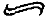

Yirmi yıl kadar önce ölüm hakkında bir kitap konusunda röportaj verip veremeyeceğim sorulmuştu bana. Yazarlık gerekçeleriyle geri çevirdim; daha sonra kendimin ele alabileceğim bir konuyu konuşarak geçiştirmek istemiyordum. Kitap çıktığında da hiç okumadım: Belki de bir boş inançtan -ya da akla yatkın- bir korkudan ötürü, kitaba katkıda bulunanlardan biri benim yavaş yavaş yöneldiğim bu konuyu benden daha iyi dile getirmiş olabilir korkusuyla okumadım. Yakın sayılabilecek bir zaman önce, kitabın ilk bölümünü ihtiyatla şöyle bir gözden geçiriyordum ki “Thomas” adında birinin verdiği bir röportaj dikkatimi çekti. Ancak daha bir sayfa okumuştum ki, o an, röportajı veren bu “Thomas”ın benim ölüm takıntılı, özgür irade terminatörü eski dostum G.’den başka biri olamayacağı apaçık ortaya çıktı.
Ölüm konusundaki başlıca Hangisini Yeğlerdiniz seçeneği (gerçi bir kez daha seçim gücümüzün olmadığı bir seçim): bilgisizlik ya da bilgidir. Le réveil mortel’i mi yeğlerdiniz, yoksa üzeri körlükle örtülü bir halde uyuklamayı mı? Bu, kolay bir seçim gibi görünebilir: Kuşku içindeyseniz, bilgiyi seçin. Ne var ki zarara neden olan bilgidir. “Thomas”/ G.’nin belirttiği gibi: “Ölümden korkmayan insanlar, sanırım onların çoğu ölümün ne anlama geldiğini bilmiyor... Ahlak felsefesinin standart kuramı, bir insan için [yaşamının baharında] dünyadan ansızın koparılmış olmasının büyük bir kötülük olduğudur; ama bana öyle geliyor ki kötülük gerçekleşeceğini bilmektedir. Sizin bilginiz olmaksızın meydana gelse, önemli olmazdı.” Ya da en azından, bizi şu penguenlere daha benzer kılardı: suyun kıyısına paytak paytak yürüyen ve nedensiz olmayan bir omuz darbesiyle itilen penguen, fokbalığından korkabilir ancak fokbalığının yol açacağı ebedi sonuçları tasavvur edemez.
G. insanların, bütün karmaşıklıkları içinde, sonsuza değin yok olup gittiklerini anlamakta ya da buna inanmakta hiç güçlük çekmiyor. Her şey, bir sivrisineğin mikro-mühendisliği gibi, “doğanın savurganlığının” bir parçası. “Onu bir çeşit, aşırı ölçüde çılgınca atışlar yapan, armağanlarını etrafa saçıp duran doğa olarak düşünüyorum; insanlar söz konusu olduğunda da aynı türden savurganlığın daha fazlası var. Milyonlarcası üretilen ve sonra da öylece atılıp giden, sonsuzlukta kaybolan bu olağanüstü beyinler ve duyarlıklar. İnsanın özel bir vaka olduğunu düşünmüyorum, sanırım evrim kuramı her şeyi açıklıyor. Bir düşünsenize, çok güzel bir kuram”, harika ve esin verici bir kuram, ancak bizim için acımasız sonuçları var.”
İşte benim adamım! Belki de bir ölüm duygusu mizah duygusu gibi bir şeydir. Hepimiz de sahip olduğumuz -ya da olmadığımız-mizah duygusunun yaşamı doğru dürüst anlayabilmek için elverişli bir duygu olduğunu düşünüyoruz. Bize ayak uyduramayanlar başkaları. Sanırım benim ölüm duygum -ki bazı arkadaşlarıma abartılı geliyor- tümüyle orantılı bir duygu. Benim için ölüm, yaşamı tanımlayan korkunç gerçek; onun sürekli olarak farkında olmadıkça, yaşamın ne olduğunu anlamaya başlayamazsınız; şarap ve güllerle dolu günlerinizin sınırlı olduğunu, şarabın bozulacağını ve hepsi de -sürahi dahil- ebediyete kadar atılmadan önce kokuşmuş suyun içinde rengi kahverengiye dönen güllerin solacağını bilmedikçe ve hissetmedikçe, mezara giden yolda önünüze çıkan böylesi hazların ve ilgilerin yer aldığı hiçbir bağlam yok. Ancak o zaman bunu söyleyebilirdim, öyle değil mi? Dostum G.’nin daha kötü bir ölüm senaryosu var, onun takıntılılığını, sağlıksız demesem bile, aşırı buluyorum (ah, bütün bunlar için “sağlıklı” bir tutum - acaba o nerede bulunur?).
G.’ye göre ölüme -ya da daha doğrusu, başka hiçbir şey düşünememe tehlikesine- karşı tek savunmamız “kısa vadeli dişe dokunur kaygılar edinmemizde” yatıyor. G. aynı zamanda bizleri avutarak ölüm korkusunun altmış yaşından sonra düştüğünü gösteren bir araştırmanın adını anıyor. Doğrusu, bu yaşa ondan önce varmış bulunuyorum ve bunun kazancını hâlâ beklemekte olduğumun haberini verebilirim. Daha bir iki gece önce, bilincime bir bıçak gibi saplanmış olarak, o korkulu ve panik yaratan an yine başgösterdi; uyanıktım, yalnızdım, tümüyle yalnızdım, yastığı yumruğumla dövüyor ve “Aa hayır, Aa Hayır, AA HAYIR” diye sonu gelmeyen bir inleme içinde haykırıyordum. Anın -dakikaların- verdiği dehşet nesnel bir tanığa, teşhircilik dolu bir kendine acıma vakasının insanı şoke eden gösterisi olarak görünebilecek şeyi ezip ortadan kaldırıyordu. Aynı zamanda dile getirilemeyecek bir vakaydı; çünkü beni bazen utandıran şey, ağzımdan çıkan betimsel ya da yanıt değerindeki sözcüklerin olağandışı eksikliği. Tanrı aşkına, sen bir yazarsın, diyorum kendi kendime. İşin sözcüklerle. Bu konuda bir ilerleme kaydedemez misin? Ölümle bundan daha ilginç bir biçimde yüzleşemez misin - şey, hiçbir zaman yüzleşemeyeceksin; ama en azından ona karşı bir itiraz yöneltemez misin? Biliyoruz ki aşırı fiziksel ağrılar dili ortadan kaldırıyor, zihinsel ağrıların da aynı şeyi yaptığını öğrenmek cesaret kırıcı.
Bir seferinde, Zola’nın da benzer şekilde, yatağında uyurken roket gibi havaya fırlayıp can korkusuna kapıldığını okumuştum. Hiçbir şey yayımlamadığım yirmili yaşlarımda, onu kardeşlik duygularıyla - ve aynı zamanda kaygıyla düşünürdüm: Eğer bu şey dünyaca ünlü bir yazarın başına ellilerinde geliyorsa, ileriki yıllarda bu şeyden yakayı sıyırmam için pek de büyük bir şansım yok. Romancı Elizabeth Jane Howard bir keresinde bana şimdiye değin tanıdığı en çok ölüm takıntılı üç kişinin eski kocası Kingsley Amis, Philip Larkin ve John Betjeman olduğunu söyledi. Bunun yazarlara özgü, hatta erkek yazarlara özgü bir şey olduğu sonucuna varmak kışkırtıcı. Amis erkeklerin kadınlardan daha duyarlı olduklarını ileri sürerdi - ki biyografisini göz önünde tutarsak, bu komik görünüyor.
Benim bundan fazlasıyla kuşkum var - hem erkeklere özgü olduğundan hem de yazarlara özgü olduğundan. “Sadece” bir okur olduğum yıllarda, yazarların, içinde gerçeğin bulunduğu kitaplar yazdıkları için, dünyayı betimledikleri için, insan kalbinin dilini okudukları için, hem tikeli hem de geneli kavradıkları ve her ikisini özgür ama yapılandırılmış biçimlerde yeniden yarattıkları için, anladıkları için, diğer insanlardan daha duyarlı -ve aynı zamanda daha az kibirli, daha az bencil- olduklarına inanırdım. Derken bir yazar oldum ve başka yazarlarla tanışmaya başladım, onları inceledim ve onlarla başka insanlar arasındaki tek farkın, onların daha iyi olduğu tek şeyin, daha iyi yazarlar oldukları sonucuna vardım. Gerçekten de duyarlı, algı gücü yüksek, bilge olabiliyorlar, genellemeler yapabiliyorlar, tikel durumları yansıtabiliyorlardı - ama sadece yazı masalarında ve kitaplarında. Dış dünyaya adım attıklarında, düzenli olarak, sanki insan davranışına ilişkin bütün kavrayışlarını yazı makinelerinde bırakmış gibi davranıyorlar. Sadece yazarlar için “ geçerli değil bu durum. Filozoflar özel yaşamlarında ne denli bilge?
“Felsefeci olduğum için hiç de daha bilge değilim” diye yanıt veriyor ağabeyim. “Daha kötüsü, yarı kamusal yaşamlarımızda, birçok akademisyen türünden çok daha az bilgeyiz.” Bir keresinde Bertrand Russell’ın otobiyografisini okurken, yazılanlara bir an için inanmadığımdan değil, daha çok korkutucu bir inanç duyduğumdan dolayı, elimden bıraktığımı anımsıyorum. İlk evliliğinin sonunu şöyle betimliyor Russell: “Bir öğle sonrası bisikletle dolaşmaya çıktım ve bir kır yolundan geçerken ansızın, Alys’i artık sevmediğimi fark ettim. O ana kadar ona olan sevgimin azaldığı konusunda bile hiç fikrim yoktu.” Buna, sonuçlarına ve ifade biçimine verilecek tek mantıklı yanıt şöyle olurdu: Filozofları bisikletlerden uzak tutun! Ya da belki de filozofları evlilikten uzak tutun! Onları Tanrı’yla hakikati tartışmaya saklayın. Bunun için Russell’ın yanımda olmasını isterdim.
Altmışıncı doğum günümde, az sayıdaki dindar arkadaşlarımdan biri olan T. ile öğle yemeği yiyorum. Ya da sadece inanç sahibi olduğunu söyleyen biri mi demek istiyorum? Her neyse, T. Katolik, boynuna bir istavroz takıyor ve geçmişteki bazı kız arkadaşlarını ürkütecek şekilde, yatağının üstündeki duvarda çarmıhta İsa var. Evet, bu durum gerçekten de inanç sahibi olmaktan çok dindar olmak gibi görünüyor, biliyorum. T. yakında R. ile evlenecek. T.’nin çarmıhta İsa’yı duvardan indirme gücü olabilir de, olmayabilir de. Doğum günüm olduğundan, kendime daha fazla soru sorma yetkisi tanıyorum, bu yüzden de T.’ye -bir Katolik olarak yetişmesi dışında- Tanrı’ya ve dinine niçin inandığını soruyorum. Bir süre düşünüp şöyle yanıt veriyor: “İnanıyorum çünkü inanmak istiyorum.” Belki biraz ağabeyim gibi görünerek, ona şu karşılığı veriyorum: “Eğer bana, ‘R.’yi seviyorum çünkü R.’yi sevmek istiyorum’ demiş olsan, çok etkilenmezdim, R. de bundan etkilenmezdi.” Doğum günüm olduğu için, üzerime içkisini fırlatıp atmaktan kaçınıyor T.
Eve döndüğümde, kapının altına itilmiş küçük bir paket buluyorum. Özellikle Hediye Yok diye rica ettiğimden ve herkese hediye vermesiyle tanınan bu hanım dostum birden fazla kez uyarıldığı için ilk tepkim hafif bir kızgınlık oluyor. Paketin içinde pille çalışan bir rozet var, düğmesine basıldığında mavi ve kırmızı noktalar belirerek “BUGÜN 60” diye yanıyor. Hediyeyi sadece kabul edilebilir değil; ama aynı zamanda mükemmel bir hediye kılan ve kızgınlığımı anında keyifliliğe dönüştüren şey, imalatçının rozetin arkasındaki mukavvaya bastırdığı sözcükleri: “UYARI: Kalp kası ritmini ayarlayan aygıtların çalışmamasına neden olabilir.’’
Doğum günümü izleyen “kısa vadeli dişe dokunur kaygılardan” biri (büyük olasılıkla) Amerika’da gerçekleşecek bir kitap tanıtma turu. New York’a varış -havalimanından kente transit ulaşmak-şimdiye değin görmüş olduğum en geniş mezarlıklardan birinin yanından geçmeyi gerektiriyor. Herhalde New York’u bir türlü sevemediğimden bu ritüel “memento mori”den29 pek hoşlanmıyorum. Kentlerin en koşuşturmalısı ve kendine en çok hayran olanındaki bu koşuşturma şu demeye gelecek; hıncahınç dolu mezar taşlarının dikeyliğinin alay ettiği Manhattan. Geçmişte sadece kabristanların sayısı ve ölümlülük aritmetiği (Edmond de Goncourt’un inanamadığı Tanrı Muhasebesi için bir iş) dikkatimi çekmişti. Şimdi ilk kez başka bir şey çarpıcı geliyor bana: onlarda hiç kimsenin olmadığı. Bu mezarlıklar modern zamanın kır bölgeleri gibi: her doğrultuda uzayıp giden hektarlarca boş arazi. Elinde tırpan tutan bir köylüyü, çitleri budayan bir işçiyi ya da harçsız taş duvar örücüsünü bulmayı hiç beklemezken, tarım işinin eski çayırlara, otlaklara ve çalılıklara getirdiği insani faaliyetin tümüyle yokluğu bir başka çeşit ölüm: sanki haşarat öldürücüler bütün çiftlik işçilerini de öldürmüş gibi. Benzer biçimde, bu Queens mezarlıklarında, tek bir beden -tek bir ruh- kımıldamıyor. Elbette bir anlamı var bunun: Ölmüş olan eski koşuşturmacılar ziyaret edilmiyor; çünkü kentin yeni yerleşim koşuşturmacıları koşuşturmakla çok meşguller. Ama bir kabristandan daha melankolik bir şey varsa, bu hiç kimsenin ziyaret etmediği bir kabristandır.
Birkaç gün sonra, trenle Washington’a giderken, Trenton’ın güneyinde bir yerde, bir başka mezarlığın yanından geçiyorum. Bunda da insan yokluğu dikkati çekmekle birlikte, daha az korkunç görünüyor: Mezarlık ara yollar boyunca size eşlik edercesine düzensiz bir şekilde uzayıp gidiyor ve aynı lekelenmiş sonluluk, ölüp gitmişlik duygusunu uyandırmıyor. Öyle görünüyor ki burada, ölüler unutulacak kadar, yeni komşulara hoş geldin demeyecek kadar ölü değiller. Ve orada, tehdit edici olmaktan uzak bu bölgenin güney ucunda, Amerikanvari neşe uyandıran bir şey var: üzerinde BRISTOL MEZARLIĞI - YERLER MEVCUT yazısı olan bir levha. Sanki, gel bize katıl, rakiplerimizden daha çok boş yerimiz var, der gibi.
Yerler mevcut. Ölümde bile reklam - Amerikan tarzı denen şey bu. Batı Avrupa’da eski din çöküşün son aşamasındayken, Amerika Hıristiyan bir ülke olarak kalıyor ve inancın buralarda hâlâ artıyor olması anlamlı gözüküyor. Ölümden sonra yaşam olup olmadığı konusundaki eski Musevi öğreti tartışmasını sonlandıran, kişisel ölümsüzlüğü teolojik bir satış öğesi olarak merkezileştiren Hıristiyanlık, her şeyi yapabilmeyi hedefleyen, her şeyden ödül bekleyen bu topluma çok iyi uyuyor. Amerika’da bütün eğilimler en aşırı noktasına götürüldüğünden de, şu anda Aşırı Hıristiyanlığı tesis etmiş bulunuyorlar. Yaşlı Avrupa, Cennet Krallığı’nın nihai gelişine karşı daha acelesiz bir yaklaşım sergiledi - diriliş ve kıyametten önce, her şeyin Tanrı’nın buyurduğu zamanda gerçekleştiği, mezarda uzun bir çürüme süreci. Amerika ve Aşırı Hıristiyanlık her şeyi aceleye getirmekten hoşlanıyor. Ürün teslimatı vaat edilen siparişi niçin daha geç izliyor olsun da daha erken izliyor olmasın? Bundan da doğru insanların günlük işleriyle ilgilenirken anında Cennet’e gittikleri ve orada, İsa ile Deccal’in altta Yeryüzü gezegeninin savaş meydanındaki hesaplaşmalarını seyrettikleri Kendinden Geçme gibi fanteziler ortaya çıkıyor. Dünyanın sonunun aksiyon, X kategorisi ve felaket filmi versiyonları.
Ardından dirilişin geldiği ölüm: nihai “mutlu sonu olan trajedi”. Bu ifade, oldum olası her türlü nükteli sözün kaynağı olduğu varsayılan şu Hollywood yönetmenlerinden birine mal ediliyor; gerçi ben bu sözle ilkin Edith Wharton’in A Backward Glance [Geriye Bakış] başlıklı otobiyografisinde karşılaştım. Wharton ise otobiyografisinde bu nükteli sözün romancı dostu William Dean Howell’a ait olduğunu ve The House of Mirth’ün [Neşe Evi]30 tiyatro uyarlamasınının ilk gece seyircisinden alkış alamamasından sonra, Howell’in ona bunu bir avuntu olarak önerdiğini dile getiriyor. Bu da söz konusu ifadeyi, bütün şu sinema yönetmenlerinin nükteli laflar etmeye başlamalarından önceki zamana, 1906 yılına kadar geri götürmekte.
Wharton’ın yaşam görüşünün Amerikanvari umutlulukla ne kadar az uyuştuğunu göz ününde tutarsak, bir romancı olarak başarısının daha da şaşırtıcı - ve bir o kadar da hayran olunacak bir başarı olduğunu görürüz. Wharton kurtuluşa ilişkin çok az kanıt görüyordu. Yaşamın bir trajedi - ya da en iyi ifadeyle trajik sonu olan acımasız bir komedi olduğunu düşünüyordu. Ya da bazen, dramatik sonu olan salt bir drama (Dostu Henry James, yaşamı “ölümden önceki zorlu durum” olarak tanımlıyordu. Ve onun dostu Turgenyev de “yaşamın en ilginç bölümünün ölüm olduğuna” inanıyordu.)
İster trajik, ister komik, isterse dramatik olsun yaşamın zorunlu olarak özgün bir şey olduğu düşüncesi de Wharton’a çekici gelmiyordu. Özgünlük eksikliğimiz -bizlere- büyüleyici gibi gelen yaşamlarımızın üzerine eğildikçe yararlı bir şekilde unuttuğumuz bir şey. Karısını daha genç bir kadın için terk eden arkadaşım M., “İnsanlar bana bunun bir klişe olduğunu söylüyorlar. Ama bana bir klişe gibi gelmiyor” diye yakınıyordu. Ancak bir klişeydi ve hala da klişe. Diyelim ki yaşamlarımızı, Einstein’ın hayal ettiği şu daha yüce yaratığın görüş açısından ve daha büyük bir uzaklıktan görebilsek, her şeyin kanıtlanacağı gibi.
Biyografi yazarı bir hanım arkadaş bir keresinde birazcık daha uzun bir görüş açısını benimseyip hayatımı yazma fikrini ortaya attı. Kocası alaycı bir şekilde, bunun çok kısa bir çalışma olacağını; çünkü benim bütün günlerimin aynı olduğunu ileri sürmüştü. Onun yorumuna göre yaşamım şöyle sürüp gidiyordu: “Kalktı. Kitap yazdı. Dışarı çıktı, bir şişe şarap aldı. Eve geldi, yemek pişirdi. Şarap içti.” Bu Kısa Yaşam’a hemen arka çıktım. Bir başkası kadar geçerliydi; herhangi uzun bir şey kadar doğruydu ya da doğru değildi. Faulkner bir yazarın ölüm ilanının şöyle olması gerektiğini söylüyordu: “Kitaplar yazdı ve öldü.”
Şostakoviç ölümden yola çıkarak ve ölüm hakkında sanat yapmanın “kol yeninizi burnunuza silmekle eşdeğer” olduğunu biliyordu. Heykelci Ilya Slonim onun bir portre büstünü yaptığında, sonuç Sovyet Sanat Komitesi Başkanı’nın hoşuna gitmemişti. “Bizim gereksinim duyduğumuz şey” dedi aparatçik heykelciye (ve dolayısıyla besteciye), “iyimser bir Şostakoviç.” Besteci böylesi çelişik görünüşlü sözleri yinelemekten hoşlanıyordu.
Ölüm üzerine kara kara düşünen biri olması dışında -zorunlu olarak, özel yaşamında- sahte umutlarla, devlet propagandasıyla ve sanatsal ıvır zıvırla da alay eden birisiydi Şostakoviç. En sevdiği hedeflerden biri uzun süredir adı unutulmuş bir rejim dalkavuğu olan Vsevolod Vişnevski’nin 1930’larda yazdığı çok tutulan bir oyunuydu; bir Rus tiyatrosu uzmanı, bu yazar üzerine yakın zamanlarda şöyle yazmıştı: “Edebi güldeste standartlarımızla bile bu yazar çok zehirli bir çiçekti.” Vişnevski’nin oyunu Bolşevik Devrimi sırasında bir gemi bordasında sahneye kondu ve dünyayı, otoritelerin olduğunu iddia ettiği gibi hayranlık uyandıran bir şekilde portre etti. Genç bir sanat komiseri olan hanım, partinin çizgisini, anarşist gemicilerle eski kafadaki Rus subaylardan oluşan mürettebata açıklar ve empoze eder. Kayıtsızlıkla, kuşkuyla, hatta saldırıyla karşılık verilir: Gemicilerden biri onun ırzına geçmeye kalkışır, bunun üzerine kadın onu vurup öldürür. Komünist enerjinin böylesi bir örneği ve adaletin anında yerine gelmesi gemicileri yanına çekmeyi başarır ve gemiciler çok geçmeden etkili bir savaşçı birimine dönüşürler. Savaş tacirlerine, Tanrı’ya ibadet edenlere, kapitalist Almanlara karşı seferber edildiklerinde, bir şekilde tutsak düşer ama kendilerini tutsak alanlara karşı kahramanca direnirler. Çatışma sırasında hepsine esin kaynağı olan hanım komiser öldürülür ve komiser şimdi tam anlamıyla sovyetleşmiş olan gemicileri, “Her zaman yüceltin... Kızıl Donanma’nın... yüksek geleneklerini” sözleriyle özendirerek ölür. Perde.
Şostakoviç’in mizah duygusuna çekici gelen şey, Vişnevski’nin oyununun karikatür derecesindeki itaatkâr olay örgüsü değildi, oyunun adıydı: İyimser Bir Trajedi. Sovyet komünizmi, Hollywood ve örgütlü din, bunların hepsi de bildiklerinden daha yakındı birbirlerine, aynı fanteziyi üreten düş fabrikalarıydı. Şostakoviç, “Trajedi trajedidir ve iyimserliğin bununla hiç ilgisi yoktur” diye yinelemekten hoşlanıyordu.
Ölmüş olan iki insan gördüm ve birine de dokundum; ama herhangi bir kimseyi ölürken görmedim; kendimi ölürken görmedikçe ve görene kadar da asla görmeyebilirim. İlkin, ölümden gerçekten korkulmaya başlandığında ölümden söz edilmez olmuşsa ve daha uzun yaşamaya başlayınca da durum iyice bu hali almışsa; ölüm aynı zamanda orada, bizimle birlikte, evde olmaktan çıktığı için gündemden düşmüş bulunuyor. Günümüzde ölümü olabildiğince görünmez kılıyoruz. Doktordan hastaneye, cenaze levazımatçısından krematoryuma kadar bu sürecin bir bölümünde profesyonellerle devlet görevlileri, bizlere tek başımıza kalacağımız ana kadar ne yapacağımızı söylüyorlar, hayatta kalmayı başarmış kişiler olarak ellerimizde birer bardakla öylece ayakta duruyoruz, birer amatör olarak nasıl yas tutulacağını öğreniyoruz. Gelgelelim daha çok yakın zamanlarda ölüm döşeğindekiler hastalıklarının son dönemlerini evlerinde geçirirlerdi, son nefeslerini aile üyelerinin yanında verirler, yörenin kadınları tarafından yıkanır, cenaze için hazırlanır, bir iki gece başları beklenir ve sonra da yörenin cenaze levazımatçısı tarafından tabuta konurlardı. Tıpkı Jules Renard gibi, bir atın çektiği, iki yana sallanan bir cenaze arabasının ardından mezarlığa gitmek üzere yola koyulur ve orada, tabutun çukura indirildiğini ve şişman bir solucanın kabrin kenarında kurumla gezindiğini seyrederdik. Çok daha hazır ve nazır, çok daha dikkatli olurduk. Onlar için daha iyi bir şeydi bu (gerçi ağabeyim ölülerin varsayımsal isteklerinden söz etmekle eleştirecek ya beni) ve büyük olasılıkla bizim için de daha iyi bir şeydi. Eski sistem, canlı olmaktan ölü olmaya ve ölü olmaktan da ortadan kaybolmaya giden süreçte daha gösterişli bir ilerleyişin yerini tutuyordu. Modern, koşuşturmacalı tarz hiç kuşku yok ki bugün ölüme bakış şeklimize daha sadık bir tarz - bir dakika önce canlısınız, bir sonrakinde ölüsünüz, gerçekten de ölüsünüz, bu yüzden arabaya atlayıp bu işi bitirelim. (Kimin arabasına bineceğiz? Merhumenin isteyeceği arabaya değil.)
Ravel’in naaşı tabuta yerleştirilmeden Stravinski onu görmeye gitti. Naaş, siyah kumaşla kaplanmış bir masanın üzerinde duruyordu. Her şey siyah beyazdı: Siyah takım elbise, beyaz eldivenler, bestecinin başında hâlâ sarılı duran hastanenin beyaz sargı bezi, çok solgun bir yüzün üzerindeki siyah kırışıklıklar; ki bu, naaşa “büyük bir azamet ifadesi” veriyordu. Ve orada ölümün büyüklüğü sona eriyordu. “Naaşın yakılması törenine gittim” diye kaydetmişti Stravinski. “Protokol dışında her şeyin yasaklandığı bu sivil gömme törenleri iç karartıcı bir deneyim.” Bunlar 1937 yılının Paris’inde olup bitiyordu. Otuz dört yıl sonra, ölme sırası Stravinski’ye gelince, naaşı uçakla New York’tan Roma’ya nakledildi, oradan da arabayla Venedik’e götürüldü. Her yere siyah ve mor renkli ilan kâğıtları yapıştırılmıştı: VENEDİK ŞEHRİ SEÇKİN BİR DOSTLUK JESTİ OLARAK BÜTÜN ÖTEKİ ŞEHİRLERDEN DAHA ÇOK SEVDİĞİ VENEDİK’TE GÖMÜLMEYİ TALEP EDEN BÜYÜK MÜZİSYEN İGOR STRAVİNSKİ’NİN NAAŞINA HÜRMETLERİNİ SUNAR. Venedik manastırlar başrahibi, Yunan kilisesi Ortodoks ayinini SS Giovanni et Paolo Kilisesi’nde yerine getirdi ve sonra da tabut, dört gondolcunun idare ettiği bir cenaze kortejinin üzerinde Colleoni heykelinin önünden geçip San Michele Adası’ndaki mezarlığa kadar götürüldü. Orada başrahip ve Stravinski’nin dul eşi, tabut çukura indirilirken ellerindeki toprakları tabutun üzerine attılar. Büyük Flaubert uzmanı Francis Steegmuller, günün olaylarını izlemişti. Kortej kiliseden kanala ilerlerken, pencerelerden sarkan Venediklilerin oluşturduğu manzaranın, “Carpaccio’nun gösterişli tören tablolarından” bir sahneye benzediğini söyledi. Protokolden fazla, çok daha fazla bir şeydi bu.
Kendimi ölürken görmedikçe ve ölene kadar. Ölüşünüzün bilincinde olmayı mı yeğlerdiniz, yoksa olmamayı mı? (Üçüncü -ve bir hayli popüler olan- bir seçenek daha var: iyileşme yolunda olduğunuz inancına kapılmanız.) Ama dilediğiniz şeye dikkat edin. Roy Porter tümüyle bilincinde olmak istiyordu: “Çünkü, bilirsiniz ya, aksi takdirde başka bir şeyi kaçırırdınız.” Sözünü şöyle sürdürüyordu: “Apaçık ki insan azap verici bir ağrıyı ve bundan kalan şeyleri istemez. Ama sanırım insan kendisi için önemli olan kişilerle birlikte olmayı ister.” Roy Porter’ın umduğu buydu ve elde ettiği de bu oldu. Elli beş yaşındaydı, yakınlarda erken emekli olmuş, beşinci karısıyla birlikte Sussex’e taşınmış ve bir serbest yazar yaşantısı sürmeye başlamıştı. Yaşadığı araziden bisikletle eve giderken (Bertrand Russell’ın evlilik muhasebesini yaptığı kır yolunu akla getirmemek güç) ansızın bir kalp kriziyle yere devrildi ve yolun kenarında tek başına öldü. Hiç kendini seyredecek vakti olmuş muydu? Ölmekte olduğunu biliyor muydu? Son düşüncesi hastanede yeniden uyanma beklentisi miydi? Son sabahını bezelye ekerek geçirmişti (belki de şu Fransız lahanası ekmeye en yakın şey bulacağımız şey). Ve eve, elinde bir demet çiçek götürüyordu ki bunlar bir anda, kendi yol kenarı nişanesine dönüşmüştü.
Büyükbabam yaşamdaki en kötü duygunun pişmanlık olduğunu söylerdi. Annem bu sözü anlamıyordu ve ben de bu duyguya hangi olayları bağlayacağımı bilmiyorum.
Ölüm ve Pişmanlık 1. François Renard, oğlunun bir lavman yaptırması konusundaki tavsiyesini duymazdan gelip, bunun yerine eline bir av tüfeği aldı, tüfeğin her iki namlusunu birden ateşlemek üzere bir baston kullandı ve “belinin üstünde, kapkara, sönmüş küçük bir yangın yeri gibi alan” oluştu. Jules güncesine şöyle yazdı: “Onu yeterince sevmediğim için kendimi kınamıyorum. Onu anlamadığım için kendimi kınıyorum.”
Ölüm ve Pişmanlık 2. Edmund Wilson’ın güncelerini ilk okuyuşumdan beri bir cümlesi kafama takıldı kaldı. Wilson 1972’de öldü; sözü edilen olaylar 1932’de cereyan etti; ben bunları, The Thirties’in [Otuzlar] yayımlandığı yıl olan 1980’de okudum.
Wilson, 1930’ların başında, ikinci karısı olan, Margaret Canby adında bir kadınla evlenmişti. Canby kısa ve kalın vücutlu, mizah duygusu olduğunu yansıtan bir yüzü olan ve “şampanya içme” zevki bulunan, bir üst tabaka kadınıydı: Wilson, onun, geçinmek için çalıştığını bildiği ilk erkekti. Güncelerinin ilk cildi olan The Twenties’de [Yirmiler], Wilson onu, “Şimdiye değin tanıdığım, içki arkadaşı en iyi kadın” diye tanımlamıştı. Güncesinde onunla ilk evlenme niyetini; ama aynı zamanda akla yatkın tereddütlerini dile getiriyordu: “İyi geçinmemize karşın, yeterince ortak noktamız pek yoktu.” Gelgelelim evlendiler ve başlangıçtan beri sadakatsizliklerin ve geçici ayrılmaların izini taşıyan alkolik bir hayat arkadaşlığını sürdürdüler. Wilson’ın Canby konusunda kuşkuları vardıysa, Canby’nin onun hakkında daha da güçlü çekinceleri vardı. “Sen soğuk anlaşılmaz cüzamlı birisin, Bunny Wilson” demişti ona bir keresinde Canby - Wilson’in, tipik bir acımasızlıkla güncesine geçirdiği bir sözdü bu.
1932 yılının Eylül’ünde, o sıralar iki yıldır evli olan çift, ayrılıklarından birini yaşıyordu. Margaret Canby California’da, Wilson ise New York’daydı. Canby yüksek ökçeli ayakkabılar giyerek Santa Barbara’da bir partiye gitmişti. Partiden ayrılırken, ayağı tökezledi, taş basamaklı bir merdivenden aşağı düştü, kafatası parçalandı ve öldü. Olay Wilson’in güncesine, şimdiye değin kaleme alınmış en dürüst ve kendini suçlu bulduğu için kendine eziyet eden, kırk beş sayfalık bir yas ifadesi olarak yansıdı. Şöyle: Wilson, uçağı alçak irtifada batıya doğru yavaş yavaş yönelirken, bu zorlama edebi hareket sanki duygularını bastırmaya yardımcı olacakmış gibi notlar almaya başlıyor. Bunu izleyen güllerde, çiziktirdiği sözcükler saygı ifadesi, erotik anıların hatırlanması, pişmanlık ve umutsuzluktan oluşan olağanüstü bir monoloğa dönüşüyor. “Dehşet dolu bir geceydi ama bu bile anımsayınca tatlı gözüküyordu” diye yazıyor güncenin bir yerinde. California’da, Canby’nin annesi ona cesaret aşılamaya çalışı”. “Ölümsüzlüğe inanmalısın, Bunny, inanmalısın!” Ne var ki o inanmaz ve inanamaz: Margaret ölmüştür ve bir daha dönmeyecektir.
Wilson kendinden ve okuru olabilecek herkesten hiçbir şeyi esirgemez. Canby’nin ona yönelttiği her acımasız suçlamayı muhafaza eder. Canby bir keresinde eleştirici, şikâyetçi kocasına mezartaşında şöyle bir yazının bulunması gerektiğinden dem vurur: “Gidip kendine bir yer bulsan iyi edersin.” Wilson onu aynı zamanda birçok şey için kutlar: yatak, içki, gözyaşları, kafa karışıklığı. Bir kumsalda sevişirlerken sinekleri kovuşlarını anımsar ve onun küçük uzuvlu “kurnaz” bedenini ikonlaştırır. (“Böyle söyleme!” diye karşı çıkardı Canby. “Beni bir kaplumbağaymışım gibi gösteriyor.”) Wilson hoşuna giden kimi cahilliklerini anımsar - “Kapının üzerindeki şu şeye ne denildiğini buldum -lento”- ve bunları onun sürekli şikayetlerinin yanına koyar: “Günün birinde çatlayacağım. Niçin benim için bir şey yapmıyorsun?” Canby onu kendisine, Guerlin parfümü gibi lüks bir eşya muamelesi yapmakla suçluyordu: “Ölsem çok hoşuna giderdi. Hoşuna gideceğini biliyorsun.”
Wilson’ın karısına evliliğin hem öncesinde hem de sonrasında kötü davranmış ve duyduğu ıstıraba haklı bir suçluluk duygusu bulaşmış olması gerçeği, bu yaslı bilinç akışına gücünü veren şeydir. Wilson’ın durumunun ortaya koyduğu canlandırıcı paradoks, onu duygusuzlukla suçlayan kişinin ölümünün onu sürüklediği duygu selidir. Ve benim zihnimden hiç çıkmayan satır da şudur: “Öldükten sonra, onu seviyordum.”
Bunny Wilson’ın soğuk, anlaşılmaz, cüzamlı bir kişi olması önemli değil. İlişkilerinin bir hata ve evliliklerinin de bir felaket olması önemli değil. Sadece ve sadece Wilson’ın gerçeği söylemesi, pişmanlığın sahih sesinin şu sözcüklerde dile gelmesi önemli: “öldükten sonra, onu seviyordum.”
Bilgiyi bilgisizliğe her zaman yeğleyebiliriz; ölüşümüzün bilincinde olmayı arzu edebiliriz; sakin bir zihnin yavaş bir çöküşü, belki de zayıflayan nabzına Voltaire gibi parmağını koyarak gözlemlediği bir en iyi durum senaryosunu umabiliriz. Bütün bunları elde edebiliriz; ama böyle bile olsa, Arthur Koestler’in tanıklığını göz önünde tutmalıyız. Koestler Ölümle Diyalog da, İspanyol İç Savaşı sırasında Franco’nun Malaga ve Sevilla hapishanelerinde yaşadığı deneyimleri kayda geçirdi. Hiç kuşku yok ki, siyasi hasımlarınca anında idama yollanma olasılığıyla yüz yüze gelen genç erkeklerle, yaşamlarının çoğunu geride bırakmış ve daha sakin bir yok oluşu zihinlerinden geçiren yaşlı erkek ve kadınlar arasında bir fark vardır. Ne var ki Koestler ölmek üzere olan birçok kişiyi -bunların içinde kendisinin de olduğundan emindi- gözlemledi ve şu sonuca vardı. Öncelikle, hiç kimse, mahkûm hücresinde olup da vurulup öldürülen arkadaşlarının ve yoldaşlarının seslerini işitenler bile, kendi ölümlerine gerçekten inanamazlar; aslına bakarsanız, Koestler bu gerçeğin neredeyse matematiksel bir şekilde dile getirilebileceğini düşünüyordu - “İnsanın ölüme inançsızlığı, ölümün yaklaşmasıyla orantılı olarak artar.” İkinci olarak, akıl, kendini ölümle yüz yüze bulduğunda çeşitli hilelere başvurur: Bizi aldatmak için “merhametli uyuşturucular ya da coşku veren uyarıcılar” üretir. Koestler, özellikle de aklın, bilinci ikiye bölme yeteneğine sahip olduğunu düşünüyordu, böylelikle bir yarı diğer yarının deneyimlediklerini sakin bir şekilde inceliyor olacaktı. Bu şekilde, “tümüyle yok oluşunun hiç deneyimlenmemesinin icabına bakmış olur bilinç.” Yirmi yıl önce Freud, “Savaş ve Ölüm Zamanları için Düşünceler” de şöyle yazmıştı: “Kendi ölümümüzü hayal etmek gerçekten olanaksız; bunu yapmaya ne zaman girişecek olsak, aslında hâlâ seyirci olarak mevcut bulunduğumuzu algılayabiliriz.”
Koestler aynı zamanda, zihin ne denli berrak ve aklı başında olursa olsun, ölüm döşeğinde insanın kendini gözlemleyebilme-sinin sahiciliğinden de kuşku duyuyor. “Dünya varoldu olalı, bir insanın bilinci yerinde olarak öldüğüne inanmıyorum. Öğrencileri arasında otururken, Sokrates içinde baldıran zehri bulunan kadehe uzandığında, sadece caka sattığına en azından şöyle böyle ikna olmuş olmalıydı... Hiç kuşku yok ki teorik olarak kadehi içip boşaltmasının ölümcül olacağını biliyordu; gelgelelim, her şeyin fazla gayretkeş, mizah yoksunu öğrencilerinin hayal ettiğinden tamamen farklı olduğunu hissetmiş olmalıydı; yani yalnızca kendisinin bildiklerinin ardında akıllıca bir kaçamak olduğunu.
Koestler Ölümle Diyalogu öylesine sinematografik, öylesine etkili ve öylesine gerçekdışı bir sahneyle sonlandırıyor ki, herhalde bu sahneyi uydurmuş olamaz. Koestler, Franco’cu bir savaşçının karısıyla değiş tokuş edilmek üzere hapishaneden serbest bırakılmış bulunuyor, bu savaşçının görevi Koestler’i uçakla buluşma yerine götürmek. Uçakları geniş beyaz bir platonun üzerinde süzülürken, kara gömlekli pilot elini lövyeden çekiyor ve siyasi hasmını yaşam ve ölüm, Sol ve Sağ, cesaret ve korkaklık hakkında yüksek sesli bir tartışmaya sürüklüyor. Tartışmanın bir noktasında yazar, “Dünyaya gelmeden önce” diye bağırıyor uçağı kullanan savaşçıya, “hepimiz de ölüydük.” Pilot aynı görüşte olduğunu söyleyip, “Ama insan o zaman ölümden niye korkuyor?” diye soruyor. “Ben ölümden hiç korkmadım” diye yanıt veriyor Koestler, “sadece ölmekten korktum.” “Benim için, tam tersi doğru” diye bağırıyor kara gömlekli adam.
Ancak tabii, herhalde birbirlerine İspanyolca bağırıyorlardı. Ölüm korkusunu mu, yoksa ölmekten korkuyu mu yeğlerdiniz? Komünistten yana mısınız, faşistten yana mı; yazardan yana mısınız pilottan yana mı? Neredeyse herkes diğerini dışta tutarak birisinden korkar; sanki akıl için her ikisini de kapsayacak yeterince yer yok gibidir. Ama eğer ölümden korkarsanız, ölmekten korkmazsınız; eğer ölmekten korkarsanız, ölümden korkmazsınız. Gelgelelim, insanın zihninde diğerini bloke etmesi için mantıklı hiçbir sebep yok; aklın, birazcık bir egzersizle, her ikisini de kapsayacak kadar genişlememesi için hiçbir sebep yok. Sonunda ölü çıkmadığım sürece ölmeye aldırış etmeyecek biri olarak, ölme konusundaki korkularımın neler olabileceği konusunda ayrıntılarıyla düşünmeye kesinlikle bir başlangıç yapabilirim. Babam hastane yatağının yanında bir sandalyede oturmuş, kendisinden hiç beklenmeyecek bir öfkeyle -”Dün geleceğini söylemiştin” diye- beni kınarken ve sonra da sıkıntılı halimden olan biteni karıştıranın kendisi olduğunu anlarken, babam olmaktan korkuyorum. Hâlâ tenis oynadığını hayal eden annem olmaktan korkuyorum. Ölümü özleyerek, sürekli olarak kendini öldürmek için yeterince hap bulup içebildiğinden dem vuran; ama hareketlerinin bir hastabakıcının başını belaya sokabileceğinden de fena halde kaygı duyan şu dostum kişi olmaktan korkuyorum. Bunamanın pençesine düşünce, sanki gizli gizli yapmak isteyeceği şey buymuş gibi karısına en ağza alınmaz cinsel fantezilerini döküp saçmaya başlayan, aslında yaradılış itibarıyla son derece kibar, tanıdığım şu edebiyatçı olmaktan korkuyorum. Bir kanepenin ardında pantolonunu indirip kilimin üzerine sıçan (bu an bana mutlu bir şekilde çocukluk anımı çağrıştırsa da) seksenlik Somerset Maugham olmaktan korkuyorum. Hem kibar hem de her şeyden çabuk midesi bulanan bir adam olan, kaldığı bakımevindeki hastabakıcı ziyaretçilerin önünde bezinin değiştirilme vaktinin geldiğini söylediğinde gözlerinde hayvanlara özgü bir korku beliren yaşlı dostum olmaktan korkuyorum. Bir imayı pek anlamadığımda ya da ortak bir anıyı ya da bildik bir çehreyi unuttuğumda, sonra bildiğimi sandığım şeylerin çoğuna güvensizlik duymaya başladığımda ve en sonunda da hepsine güvensizlik duyduğumda ağzımdan çıkacak olan şu sinirli gülüşten korkuyorum. Kateterden, bacak askısından, terleyen vücuttan ve beynin harap olmasından korkuyorum. Chabrier ve Ravel’in yazgıları gibi, kim olduğumu ve ne yaptığımı bilmemenin yazgısından korkuyorum. Belki de Stravinski ihtiyarlığının son aşamasında, odasından karısına ya da ev sakinlerinden birine seslendiğinde onların sonlarını aklından geçiriyordu. “Neye ihtiyacın var?” diye soruyorlardı. “Kendi varoluşumdan emin olmaya” diye yanıt veriyordu. Belki de bu, bir el sıkışma, bir öpücük ya da en sevdiği plaklardan birinin çalınmasıyla onay bulabiliyordu.
Arthur Koestler yaşlılığında şöyle kafa karıştırıcı bir soru formüle etmekle gurur duyuyordu: “Bir yazar için ölmeden önce unutulmak mı iyidir, yoksa unutulmadan önce ölmek mi?” (Jules Renard kendi vereceği yanıtı biliyordu: “Poil de Carotte ve ben birlikte yaşıyoruz, umarım ben ondan önce ölürüm.”) Ne var ki üçüncü bir olasılığın araya sızmasına yetecek gözenekli bir Hangisini Yeğlerdiniz seçeneği bu: Yazar, ölmeden önce, bir yazar olduğuna ilişkin her türlü anısını yitirmiş olabilir.
Dodie Smith’e ünlü bir oyun yazarı olduğunu anımsayıp anımsamadığı sorulduğunda, “Evet, sanırım anımsıyorum” diye yanıt vermişti, tamı tamına aynı şekilde - gerçeğin gerekli olduğunun ahlaken bilincindeymiş gibi çatık kaşlı bir konsantrasyonla; onun yıllar içinde böyle sayısız soruya aynı şekilde yanıt verdiğini görmüştüm. Bir başka deyişle, en azından kendi kişiliğiyle tutarlı kalıyordu Dodie Smith. Zihinsel ve fiziksel sürçme korkularına en yakın duran korkuların ötesinde, umduğumuz ve kendi adımıza tutunduğumuz şeyler bunlar. Biz insanların, “Biliyorsunuz, o konuşamasa da, göremese de, işitemese de sonuna kadar hep kendisi kaldı” demelerini istiyoruz. Bilim ve insanın kendini tanıması bizleri bireyselliğimizi oluşturan şeylerden kuşku duymaya götürmüş olsa da, belki de bizim olduğuna ve yalnızca bizim olduğuna kendimizi aldatarak inandırdığımız o kişilikte kalmak istiyoruz yine de.
Bellek kimliktir. Şeyden beri - yani kendi varlığımı anımsayabildiğimden beri buna inandım. Siz yaptığınız şeylersiniz; yaptığınız şeyler belleğinizde; anımsadığınız şeyler kim olduğunuzu tanımlıyor; yaşamınızı unuttuğunuzda, ölümünüzden önce bile, var olmanız sona eriyor. Uzun süre alkolle mücadele eden bir hanım arkadaşımı içkiden uzak tutabilmek için bir hayli uğraşmış ancak başarısız olmuştum. Onu çok yakından izliyor ve önce kısa vadeli belleğini, sonra uzun vadeli belleğini ve bunlarla birlikte aradaki her şeyi yitirdiğini görüyordum. Lawrence Durrell’ın bir şiirinde “aklın yavaş gözden düşüşü” diye adlandırdığı şeye korkunç bir örnekti bu: aklın gözden düşüşü. Ve bu düşüşle birlikte -akıl kendini ve onu temin edip ondan başka hiç kimseyi temin etmezken özel ve genel anıların kaybı saçma bir uydurma şeyler ortaya koyma gösterisiyle örtülüyordu- evet, bu düşüşle birlikte onu tanıyanlar ve sevenler için de pek farklı olmayan bir düşüş vardı. Ona ilişkin anılarımıza tutunmaya çalışıyorduk -böylelikle de ona tutunmuş oluyorduk-kendimize “onun” hala aramızda olduğunu, üzeri bulutlarla kaplı olmakla birlikte ansızın beliren hakikat ve açıklık anlarında ara sıra görünür olduğunu söylüyorduk. Muhatabım kişiler kadar kendimi de ikna etme girişimiyle, karşı çıkarcasına, “Altta yatan özünde aynı o” diye yineler dururdum. Daha sonra anladım ki hep kendimi aldatmaktaydım, bu “alt” görünen yüzeyle aynı oranda tahrip oluyordu - olmuştu. O gitmişti, sadece onu inandıran bir dünyaya gitmişti - ancak duyduğu panikten, böylesi bir inanmanın sadece rastlantısal olduğu apaçık anlaşılıyordu. Kimlik bellektir, diyordum kendime; bellek kimliktir.
Kendisiyle tutarlı kalarak ölmek: öğretici bir vaka. Eugene O’Kelly, üst düzey bir Amerikan muhasebe şirketinin elli üç yaşında başkanı ve CEO’suydu. Kendi tanımıyla, bir başarı öyküsü örneğiydi: Emrinde 20.000 çalışanın bulunduğu “A tipi” bir kişiliğe sahipti, çılgınca bir çalışma planı, yeterince göremediği çocukları ve “kişisel Şerpam” diye sözünü ettiği kendisine bağlı karısı vardı. İşte O’Kelly’nin “Mükemmel Günüm” diye adlandırdığı sürecin bir özeti:
Yüz yüze görüştüğüm bir-iki müşterim olur, her şeyden çok bunu severim. Kendi özel ekibimden en az biriyle görüşürüm. New York’ta ve dünyanın her bir köşesinde bulunan ofislerdeki ortaklarla onlara nasıl yardımcı olurum diye telefonda konuşurum. Bazen rekabet içinde bulunduğum kişilerden biriyle mesleki açıdan ortak bir hedefe ulaşmak için birlikte nasıl çalışabiliriz diye fikir tartışması yaptığım olur. Elektronik ajandamda listelenmiş birçok işi tamamlarım. Üç yıl önce şirketin ortaklarınca üst mevkiye getirildiğimde daha iyi bir duruma sokmaya karar verdiğim en azından üç alandan birinde çalışmalar yaparım: iş hacmini genişletmek... kaliteyi artırmak ve riskleri azaltmak, benim ve şirketin uzun vadeli kalıcılığı açısından son derece hayati bir şey olan, şirketimizi çalışılacak daha da iyi bir yer haline getirmek, gerçekten de çalışılacak harika bir yer, insanlarımıza daha dengeli yaşamlar sürmeye olanak verecek bir yer haline getirmek.
2005 baharında, O’Kelly, Başkan Bush’la bir yuvarlak masa toplantısı yapmak üzere Beyaz Saray’a davet edilmiş 50 CEO’dan biriydi. İşinde ondan daha talihli biri var mıydı?
Ne var ki tam o sırada, O’Kelly’nin talihi döndü. Özellikle sıkı bir iş gününden sonra geçici bir yorgunluk olarak gördüğü şey önce yanak kasının hafifçe sarktığı bir rahatsızlığa, sonra felç kuşkusuna ve sonra da -ansızın ve geri döndürülemez bir şekilde- iflah olmaz bir beyin kanseri tanısına dönüştü. Söndürülemeyen bir yangındı bu. Büyük tutarda paralar ödenerek tutulan uzmanların hiçbiri de acı gerçeği değiştiremiyordu: Üç aylık, belki bir gün fazla bir ömrü kalmıştı.
O’Kelly bu haberlere, kişilik özelliğini oluşturan, “hedefine odaklanmış” ve gücünü bir noktada toplamış rekabetçi bir kişi gibi tepki verir. “Başarılı bir yönetici nasıl stratejik davranmayı yönlenir ve el attığı her konuda ‘kazanmaya’ hazırlanırsa, ben de ömrümün kalan son yüz gününde olabildiğince yöntemli olmaya odaklanmıştım artık.” İçinde bulunduğu zorlu duruma “bir CEO’nun hüner dağarcığını” uygulamayı planlar. Kendine “çarçabuk yeni hedefler koyması” gerektiğini kavrar. “Kendini yaşamının yeni koşullarına hızla uyarlayabilmek için nasıl bir birey olması gerektiğini tasarlamaya” uğraşır. “Yaşamının son ve en önemli yapılacaklar listesi”ni çıkarır.
Öncelikler, yöntemler, hedefler. İşini ve mali durumunu düzene sokar. “Mükemmel anlar” ve “mükemmel günler” yaratarak ilişkilerini nasıl “gevşeteceğine” karar verir. “Bir sonraki aşamaya geçişi” başlatır. Kendi cenaze törenini planlar. Oldum olası rekabetçi biri olduğundan, ölümünü “olabilecek en iyi ölüm” yapmak ister ve yapılacaklar listesini tamamladıktan sonra, şu sonuca varır: “Şimdi ölümde ‘başarılı olmaya’ motive olmuştum.”
Her Yüz Günün kaçınılmaz olarak Waterloo’ya götüreceğini düşünenler için, ölümde “başarılı olma” düşüncesi grotesk, hatta komik görünebilir. Ancak, o zaman herkesin ölümü birisine komik görünecektir. (O’Kelly yaşayacak sadece üç aylık ömrü olduğunu öğrendikten kısa bir süre sonra ne yaptı biliyor musunuz? Kısa bir öykü yazdı! Sanki dünyanın bir başka öyküye ihtiyacı varmış gibi...) Sonra da kaçınılmaz olarak bir hayalet olarak adlandırılması gereken şeyin yardımıyla, son teslimat tarihinizle yüz yüze geldiğinizde, yazmaya karar verdiğiniz -ölmek hakkındaki kitabı-bir araya getirdi.
O’Kelly bağlarını gevşetmeye ihtiyaç duyduğu dostlukları listeler ve kategorize eder. Daha yakın çevresine gelmeden önce, çok şaşırtıcı bir şekilde, listesinde bin tane ad vardır. Ne var ki iş bitirmeye alışık birinin hızı ve gayretiyle, bu görevi tam üç haftada bitirir: Bazen sadece bir not yazarak ya da telefon görüşmesi yaparak, ara sıra da belki “mükemmel bir an” içerebilen kısa bir toplantıyla. İş daha yakın dostlukların bağlarını gevşetmeye geldiğindeyse, tek tük insanların direnciyle karşılaştığı olur. Bir iki dost, tek bir elvedayla, ortak anılar yâd edilirken park çevresinde yapılan bir gezintiyle aldatılmak istemez. Ancak O’Kelly gerçek bir CEO gibi, böylesi aşırı duygusalca yaklaşımları geri çevirir. Kararlı bir şekilde şöyle der: “Bunun böyle olması istiyorum. Bunu özellikle bağlarımızı gevşetebilelim diye kurgtıladım. Ve bundan mükemmel bir an yarattık. Bu anı yaşayalım ve ilerleyelim. Bir başka görüşme daha planlamayalım. Mükemmel bir anı daha iyi kılmaya uğraşmak işe yaramaz.” Hayır, durumu bu şekilde dile getireceğimi de sanmıyorum. Öte yandan, O’Kelly gibi biriyle karşılaştım mı, bundan da kuşkum var. O’Kelly’nin yeniyetmelik çağındaki kızı için planladığı “bağları gevşetme” harekâtı Prag’a, Roma’ya ve Venedik’e yolculuk yapmayı gerektirir. “Özel bir jet kiralardık ve bu, uzaklarda, kuzeyde bir yerde uçağımıza yakıt ikmalini gerekli kılardı ve bu da Gina için, Inuit’lerle tanışma ve ticaret yapına fırsatını yaratırdı.” Bu, kişiliğiyle tutarlı olarak ölmekten çok bir karikatür olarak ölmek gibi oluyor. Kızınıza elveda diyorsunuz; ama onun için aynı zamanda Inuit’lerle ticaret yapmak için bir fırsat yaratıyorsunuz. Peki Inuit’leri bu olaydaki ayrıcalıklı işlevlerinin ne olacağı konusunda bilgilendiriyor musunuz?
Böylesi anlar insanı inanmamaya davet eden ve içinde yergi olan ahmakça bir şaşkınlığı kışkırtabilir. Ne var ki O’Kelly kesinlikle yaşadığı gibi ölüyordu ve hepimizin bu kadar talihli olması gerekir. Onun birazcık hile yapıp yapmamış olmasıysa bir başka mesele. Çalışına planının sıkılığı yüzünden, CEO’nun daha önce Tanrı’yla pek fazla bir alışverişi olmamıştı; gerçi O’Kelly Tanrı’yı gerçekten de bir çeşit acil çöküş durumunda başvurulacak biri olarak kullandı. Birkaç yıl önce, müstakbel Inuit tüccarına gençlik çağı artrit tanısı koyulmuştu ve kızın babası, “Beni o yıl sık sık kilisede bulabilirsiniz” diye söylediğini anımsıyordu. Şimdi, son hesabı kısa bir süre içinde kapanmak üzereyken, O’Kelly yeniden yukarıdaki şeylerden, gökyüzündeki uluslarötesi karargâhtan dem vurur. Dua eder, meditasyon yapmayı öğrenir. “Öteki yandan” destek bulduğunu hisseder ve “Bu tarafa öteki taraf arasında hiç acı yok” diye rapor eder. Karısı, “Eğer korkuyu fethedersen, ölümü fethedersin” diye açıklamada bulunur - tabii, sonunda, ölü olmaktan çıkmıyorsun. O’Kelly sonunda öte dünyaya göçtüğünde, kendi kişisel Şerpa’sına göre, “sakin bir kabulleniş ve hakiki bir umut durumu içindedir”.
Psikanalistler bize, kendi kişiliklerine en çok bağlı olanların ölmekte en çok zorlananlar olduğunu söylüyor. O’Kelly’nin A tipi kişilik yapısı, yaşı ve sonunun çabukluğu göz önünde tutulursa, davranışı son derece etkileyici. Belki de Tanrı kendisiyle sadece acil durumlarda muhatap olunmasına aldırış etmiyor. Görgü tanıklarına aklı başında bir tanrının böylesi değişken ve çıkarcı bir ilgiden alınması gerekiyormuş gibi görünebilir. Ama Tanrı şeyleri farklı bir biçimde görebilir. Tanrı alçakgönüllü bir şekilde, yaşamlarımızdaki günlük, ket vurucu bir mevcudiyet olmak istemeyebilir. Bir çöküş uzmanı, bir sigorta şirketi, bir son başvuru mercii olmaktan zevk alabilir.
O’Kelly cenaze töreninde org müziği istemiyordu; flüt ve arp çalınmasını özellikle belirtti. Ben annemin cenazesinde Mozart çaldırdım; annem babamın cenazesinde Bach çaldırdı. Ölüşümüzü hangi müzikle yerine getirmeyi arzu ettiğimizden çok kendi cenazemizde çalınacak müzik üzerine kafa yormaya zaman harcarız. Bana yazma konusunda ilk cesaret aşılayanlardan biri olan edebiyat editörü Terence Kilmartin’in, merdiven çıkamayacak kadar güçsüz olduğu bir dönemde evinin alt katında bir yatakta yattığını ve Beethoven’ın geç dönem yaylı dörtlülerini kocaman hoparlörleri olan, taşınabilir yassı ve uzun bir teyp üzerinde dinlediğini anımsıyorum. Ölüm döşeğindeki Papa ve İmparatorlar, gelen ölümü müzikle karşılamalarına yardım etmeleri için kendi koro ve çalgıcılarını huzurlarına çağırırlardı. Gelgelelim modern teknoloji hepimizi birer papa ve imparator haline getirdi. Hıristiyan cennetini reddedebilseniz de bedeniniz ölüp giderken Bach’ın Magnificat’ının, Mozart’ın Requiem’inin ya da Pergolesi’nin Stabat Mater’inin kafanızın içini aydınlatmasını sağlayabilirsiniz. Sydney Smith cenneti trompet sesleri eşliğinde kaz ciğeri yediği bir yer olarak düşünüyordu - ki bu sahne bana hep bir uyum olmaktan çok bir çatışma gibi gelmiştir. Yine de kolunuza takılan bir tüpten damarlarınıza azar azar şekerli besin yayılırken, Gounod’nun St Cecilia Mass’ını coşkuyla icra eden nefesli çalgıların kulaklarınızda gürleyip durmasını sağlayabilirsiniz.
Şayet ölmek için uygun bir zaman bulabilecek olursam, kitap okumaktan çok müzik dinleyebileceğimi sanıyorum. Kurmacanın o müthiş uzun ve zahmetli yol alışı, bir yapıtta bulunan olay örgüsü, karakterler, durum... gibi şeyler için yeterli yer -kafamın içinde boş bir yer- olacak mı? Hayır, sanırım ben müziğe gereksinim duyacağım, uygun şekilde damardan olanına: dosdoğru kana karışanına, dosdoğru kalbe gidenine. “Zamanı hazmetmek için sahip olabileceğimiz en iyi araç” belki de bize ölümün başlangıcını hazmetmemize yardım edecek. Müzik benim için aynı zamanda iyimserlikle bağlantılıdır. Isaiah Berlin’in yaşlılığındaki en önemli zevklerinden birinin gelecek aylar için konser bileti ayırtmak olduğunu okuduğumda anında bir duygudaşlık hissetmiştim (onu sıklıkla Festival Hall konser salonunun üst katında hep aynı locada görürdüm). Bilet almak, bir şekilde, müzik dinleyeceğinizi garanti ediyor, en azından duymak için para ödediğiniz son akorların son yankısı duyulmaz olana değin yaşamınızı uzatıyor. Bu, nedense, tiyatroda işe yaramazdı.
Bununla birlikte, kişiliğinizle başarılı bir şekilde tutarlı kalmaya bağlı olurdu. En iyi ölüm senaryosunu ilk kez kafamdan geçirdiğimde (x ay, 200-250 sayfa için gereken zaman), bu meseleyi sorgulamadan kabullendim. Sonuna değin kendim olarak kalacağımı sanıyordum, aynı zamanda içgüdüsel olarak bir yazar olmakta ısrarlıydım; dünyadan ayrılırken bile onu betimleyip tanımlamaya istekliydim. Ne var ki kişilik denilen şey son aşamalarında ani sarsıntılara, büyütmelere ve çarpıtmalara maruz kalabilir. Bruce Chatwin’in bir dostu, yazarın ciddi biçimde hasta olabileceğini, öğle yemeğini ilk o ödemeye kalkınca anladı, o ana değin ondan hiç beklenmedik bir davranıştı bu. Aklın kısa zaman içinde gerçekleşecek kendi yok olup gitmesine tepkisini kim öngörebilir ki?
Montaigne, düşünü kurduğu gibi, lahana ekerken ölmedi. Ölüm, bu kuşkucu ve Epikurosçuya, hoşgörülü deiste, sınırsız bir merak ve bilgiye sahip bu yazara, yatak odasında Kudas ayini yapılırken geldi: Tam da (anlatılanlara bakılırsa) okunup kutsanmış ekmeğin havaya kaldırıldığı anda. Katolik Kilisesi için örnek bir ölümdü bu - yine de Montaigne’in yapıtlarının bir yüzyıl içinde karalisteye alınmasını engelleyemedi.
Yirmi yıl önce, onun Bordeaux yakınlarındaki evini -daha doğrusu, içinde yazılarını kaleme aldığı kuleyi- ziyaret ettim. Zemin katta bir şapel, birinci katta yatak odası ve üstte çalışma odası vardı. Dört yüzyıl boyunca, hem gerçekler hem de mobilyalar herhangi bir filozofun bilebileceği kadar doğrulanmış olmaktan uzaktı. Büyük denemecinin muhtemelen oturmuş olabileceği kırık bir sandalye vardı - ya da bu sandalye değilse, bir benzerine oturmuştu. Rehber kitabın imalı ve kaçamaklı Fransızca’sında, yatak odası için, “Hiçbir şey bizi Montaigne’in burada ölmüş olabileceğini düşünmekten alıkoymuyor” ifadesi yer alıyordu. Çalışma odasının çatı kirişlerinde hâlâ Yunanca ve Latince sözler vardı, gerçi bunlar birçok kez restore edilmişti; Montaigne’in evrenini oluşturan bin ciltlik kütüphane ise sağa sola dağılalı uzun zaman olmuştu. Raflar bile kaybolmuştu: geriye kalan tek şey, kitapların bağlanmış olabileceği D şekilli bir iki metal parçasıydı. Bayağı filozofça görünüyordu bu.
Montaigne’in son nefesini, belki de gözlerini havaya kaldırılmış kutsanmış ekmeğe dikmişken verdiği (tabii hiçbir şey aklının lahanalarında olduğunu düşünmekten de alıkoymuyor bizi) yatak odasının ötesinde küçük bir platform var. Filozof oradan, düşüncelerini kesintiye uğratmaksızın alt kattaki şapelde yapılan ayini izleyebiliyordu. Yedi basamaktan oluşan dar ve görüş açısına uygun bir tünel, hem harika bir akustik hem de rahibi enikonu görme olanağı sağlıyordu. Rehber ve diğer turistler uzaklaştıktan sonra, bir çeşit saygı sunma içgüdüsü beni platformun üzerinde durmaya ve sonra da, bu merdivenimsi şeyden aşağıya doğru sürünerek ilerlemeye itti. İki basamak sonra, ayağım kaydı ve bir anda kendimi yan duvarlara doğru savrulmuş halde buluverdim, bu taş tünelden yuvarlanıp da aşağıdaki şapele düşmemeye uğraşıyordum. Orada sıkışmış halde, aşina bir rüyanın yol açtığı klostorofobiyi hissettim - insanın yeraltında, daralan bir boru ya da tüpün içinde, karanlığın gitgide arttığı bir ortamda, panik ve dehşet duyarak kaybolduğu bir rüya. Hiç uyanmaksızın, doğrudan doğruya size ölümü çağrıştırdığını bildiğiniz bir rüya.
Rüyalardan her zaman kuşku duymuşumdur; ya da daha doğrusu, onlara aşırı ilgi göstermekten. Uzun süredir birbirlerine açık bir şekilde âşık bir çift tanıyordum, bu çiftin günleri her zaman karısının kocasına o gece görmüş olduğu rüyalarını anlatmasıyla başlıyordu. Yetmişli yaşlarında, bunu hâlâ, sadık bir şekilde yapıyorlardı. Ben karımın rüya anlatmaya son derece kısa ve özlü yaklaşımım buna yeğlerim - aslı aranırsa, buna çok değer veririm. Karım uyanır, raporunu ya çok bilmecemsi bir özet olarak -”bir çöl gördüm”-ya da “oldukça kafa karıştırıcıydı” yahut “bu rüyadan uyandığıma memnunum” gibisinden anlamlı eleştirel değerlendirmelerle verir. Bazen yorumla eleştiri bir araya gelir: “Uzun ve dağınık anlatımlı bir roman gibi, Kızılderili düşleri.” Hemen ardından yeniden uykuya dalar ve bu konuda her şeyi unutur.
Bu durum, rüyaları kendi perspektiflerine oturtmuş gibi görünüyor. Kurmaca yazarlığımın ilk yıllarında, kendin için iki kural koymuştum: Rüya yok ve de hava yok. Bir okur olarak, “anlamlı” rüyalardan, önsezilerden, görülerden ve bu tür şeylerden sıkıldığım gibi; uzun süredir “anlamlı” meteroloji de -fırtına bulutları, gökkuşakları, uzaklardan gelen gök gürültüleri- bana rahatsızlık verir olmuştu. Hatta ilk romanımın adını Hava Yok koymayı planlıyordum. Ne var ki kitabın yazılması o kadar uzun sürdü ki sonunda düşündüğüm başlık fazla mütevazı görünür oldu.
Tahmin edebileceğiniz sıklıkta ölüm rüyaları görüyorum: Bazıları gömülmekle bağlantılı, yeraltında bir yere kapatılmayı ve dar alan tünelleri kapsıyor; ötekilerse daha aktif savaş filmi senaryolarını içeriyor - takip edilmeyi, kuşatılmayı, sayıca az kalmayı, silahsız kalmayı, atacak mermi bulamamayı, rehin alınmayı, haksız biçimde idam mangasının karşısına çıkmayı, vaktimin sandığımdan daha az olduğunu fark etmeyi. Her zamanki şeyler. Birkaç yıl önce, sonunda bir tema değişikliği baş gösterdiğinde, içim biraz rahatladı: Rüyamda, gönüllü olarak ölmek isteyenlere hoşgörü gösteren bir ülkenin intihar oteline kaydımı yaptırdığımı görüyordum. Formları doldurdum, karım onayladı - ya benimle aynı serüvene katılmayı onayladı ya da daha alışıldık biçimde, bana eşlik ve yardım etmeyi. Ne var ki oraya vardığımda, otel odasını son derece kasvetli buluyorum - ucuz mobilyalar, geçmiş ve gelecek sakinlerin ağır kokuları sinmiş pejmürde bir yatak, size bir başka bürokratik işe bakar gibi davranan canı sıkkın aparatçikler. Yanlış bir karar vermiş olduğumu anlıyorum. Otelden ayrılmak istemiyorum (ya da hatta otele kayıt yaptırmak), bir yanlış yaptım, hayat hâlâ ilgilenilecek şeyler ve bazı küçük mobilyalarla dolu; ancak bunları düşünürken bile, imzamı attığım süreç bir kez başlayınca geri adım atamayacağımın, evet, saatler, hatta dakikalar içinde öleceğimin farkındayım; çünkü kesinlikle hiçbir kaçış yolu, dışarı çıkmama yardımcı olacak Koestlervari hiçbir “akıllıca hile” yok.
Gördüğüm bu yeni rüyadan tam olarak gurur duymasam bile, bilinçaltımın en azından güncellenmiş olmasından, dünyadaki değişimlere hâlâ ayak uyduruyor olmamdan memnundum. Şair D.J. Enright’ın son kitabı olan Injury Time’dan [Hasar Zamanı], onun da neredeyse aynı rüyayı ziyaret ettiğini öğrenince, memnuniyetim biraz azaldı. Onun kayıt yaptırdığı kurum benimkinden biraz daha şık görünüyordu, ancak bir melankoliğin gördüğü gerçeküstü özellikler taşıyan rüyalarında olduğu gibi bir şey yanlış gidiyordu. Onun durumunda, intihar otelinin zehirli gazı bitmişti. Bu yüzden Enright ve karısı için yeni plan, bir kamyonetle yerel postaneye nakledilmekti; ancak Enright -son derece makul bir şekilde- oradaki olanakların hem çok daha az insani hem de daha etkisiz olacağından korkuyordu.
Biraz düşününce, bu iki olayın eşzamanlı oluşuna fazla aldırış etmedim (rüyalar konusunda mülkiyetçi davranmak tuhaf bir kendini beğenmişlik olurdu). Enright’ın kitabının bir başka yerinde şu” alıntıyla karşılaşmış olmak beni daha çok korkuttu ve cesaretimi kırdı: “Ardından ölüm gelmese gerçekte ölmeye karşı çıkmazdım.” Ama onu ilk kez ben söyledim, diye düşündüm - bunu yıllardır söyleyip duruyordum ve aynı zamanda yazmıştım. İşte ilk romanımda, adı Hava Yok olmayan romanımda vardı bu: “Sonunda Ölü olmadıkça Ölmeye hiç aldırış etmem.” Peki Enright kimden alıntı yapıyor? Mortal Questions [Ölümcül Sorular] başlıklı bir kitapta, Thomas Nagel adında birinden. Onu Google’da arıyorum: New York Üniversitesi’nde felsefe ve hukuk profesörü; kitabının yayımlanma tarihi 1979; benimki, 1980. Allah kahretsin! Ben romanım üzerinde çalışmaya sekiz dokuz yıl önce başlamıştım, diye karşı bir tez ileri sürebilirdim; ne var ki bu, ancak bir intihar oteldeki bir rüya protestosu kadar inandırıcı olurdu. Ve oraya hiç kuşkusuz her ikimizden de önce birisi gitti. Belki de ağabeyimin çok iyi bildiği şu eski Yunanlılardan biri.
“Ama onu ilk kez ben söyledim” diye yazışımdaki ateşliliğe dikkat etmiş olabilirsiniz - hatta buna acıma duymuş olabilirsiniz. Israrlı, vurgulu, italikleştirilmiş ben. Hayvani bir içgüdüyle bağlı olduğum ben, elveda etmem gereken ben. Ne var ki bu ben, hatta onun gündelik italikleştirilmemiş gölgesi, ben olarak düşündüğüm şey değil. Kolej papazını mutlu bir ateist olduğuma inandırdığım vakitlerde, moda bir deyim vardı: kişilik sağlamlığı. Kendi varoluşumuzun tutkunları olarak inandığımız şey bu, öyle değil mi? Çocuğun erkeğe ya da kadına, baba ya da anne olması söz konusudur; yavaş yavaş ama kaçınılmaz olarak kendimiz oluruz ve bu benliğin genel bir silueti, bir açık seçikliği, bir tanınabilirliği, bir sağlamlığı olacaktır. Yaşam içinde tek bir karakter inşa ediyoruz ve elde ediyoruz, içinde bize ölme izni vermelerini umduğumuz bir karakter.
Gelgelelim, beynimizin gizlerine nüfuz etmiş, her şeyi canlı renklerle sergileyen, düşünce ve heyecanın nabızlarını tutabilen beyin haritacıları, evde hiç kimsenin olmadığını söylüyorlar bize. Makinenin içinde hayalet yok. Bir nörofîzyolojistin ifade ettiği gibi, beyin bir “et yığını”ndan ne daha fazla ne daha az (benim et dediğim şey değil; ama sakatat sözcüğünü kullanmak da içimden gelmiyor), Ben, hatta ben bile, düşünce üretmiyorum; düşünceler beni üretiyor. Beyin haritacıları, ne denli dikkatle gözlem yapıyor olurlarsa olsunlar, “yeri saptanacak ‘benlik”‘ diye bir şey bulunmadığı sonucuna varabiliyorlar. Bu yüzden kalıcı bir benlik ya da ego yahut ben ya da ben düşüncemiz -yeri saptanabilecek bir düşünce olması şöyle dursun- yaşamlarımızda yüz yüze olduğumuz bir başka yanılsama. Ego Kuramı’nın yerine -bunca uzun zamandır ve bu denli doğal şekilde sayesinde hayatta kaldığımız bu kuramın yerine- daha iyisi olan Demet Kuramı geçmektedir. Beynin denizaltı kaptanı düşüncesi, erkek ya da kadınların yaşamlarındaki olaylardan sorumlu olan örgütleyici özne düşüncesi, bizim sadece belli başlı neden-sonuç ilişkisine bağlı olarak bir araya gelmiş beyinsel aktiviteler dizisi olduğumuz düşüncesine boyun eğmek zorundadır. Bunu son olarak ve cesaret kırıcı bir şekilde (edebi olmasa bile) dile getirmek gerekirse, şöyle denebilir: Bu denli hoşlandığımız şu “ben” aslında sadece dilbilgisinde vardır.
Oxford’da, modern diller okumaktan vazgeçtikten sonra, benim eski moda benim, iki yarı yıl felsefe okudu ve bu sürenin sonunda, bu iş için gerekli beyne sahip olmadığı söylenildi ona. Her hafta bir filozofun dünya hakkında neye inandığını ve bir sonraki hafta da bu inançların niçin yanlış olduğunu öğrenirdim. En azından durum bana böyle görünüyordu ve ben nihai bir noktaya varmak istiyordum: O zaman, gerçekte hakikat nedir? Ne var ki felsefe ona peşinen yakıştırdığım amaçtan çok, felsefe yapma sürecinin kendisi hakkındaymış gibi görünüyordu: Bize dünyanın neden oluştuğunu ve o dünyada en iyi nasıl yaşanacağını söylemek. Hiç kuşku yok ki bunlar naif beklentilerdi ve ahlak felsefesi, dolaysız bir uygulanabilirliğe sahip olmak şöyle dursun, “iyilik”in “sarılık” gibi bir şey olup olmadığım tartışmaya başladığında, o denli hayal kırıklığına uğramam da gerekmezdi. Bu yüzden, hiç kuşkusuz bilgece davranarak, felsefeyi ağabeyime bıraktım ve edebiyata döndüm. Edebiyat bu dünyanın neden oluştuğunu bize en iyi şekilde söylemiştir ve hala da söylemektedir. Edebiyat bize aynı zamanda, bu dünyada en iyi nasıl yaşanacağını da söyleyebilir; gerçi bunu en etkili biçimde öyle yapıyormuş gibi gözükmediğinde gerçekleştirir.
Bana öğretilmiş olan dünyanın ancak-gelecek haftaya-kadar doğru birçok yorumundan biri de Berkeley’in yorumudur. Berkeley “evlerin, dağların, ırmakların dünyasının ve kısacası bütün duyulur nesnelerin” tamı tamına fikirlerden, duyumsal deneyimlerden oluştuğunu savunuyordu. Karşımızdaki bedensel, dokunulabilir, zaman içinde doğrusal; yani gerçek dünya olarak düşünmekten hoşlandığımız şey, kafalarımızın içinde bir film gibi akıp giden -erken sinema- özel imgelerden başka bir şey değildir. Böylesi bir dünya görüşü, mantığı gereği, çürütülebilir bir şey değildi. Daha sonraları, Edebiyat’ın Felsefe’ye verdiği yanıta çok sevindiğimi anımsıyorum: Dr. Johnson bir taşa tekme atar ve “Onu böyle çürütüyorum!” diye haykırır. Bir taşa tekme atıyorsunuz, onun sertliğini, sağlamlığını, gerçekliğini duyumsuyorsunuz. Ayağınız inciniyor ve işte size kanıt. Kuramcı, biz İngilizlerin son derece gururlandığı sağduyu tarafından alt ediliyor.
Dr. Johnson’ın tekme attığı taş. bugün biliyoruz ki hiç de katı değildi. Çoğu katı şey, esas olarak boş uzamdan oluşur. Eğer katı sözcüğüyle geçirmez olanı anlıyorsak, dünyanın kendisi katı olmaktan uzaktır: nötrino adı verilen ve dünyayı bir baştan bir başa geçebilen çok küçük parçacıklar vardır. Nötrinolar Dr. Johnson’ın taşının içinden hiçbir güçlük olmaksızın geçebilir ve geçiyorlardı; sertliğin ve geçirmezliğin timsali olan elmaslar bile, gerçekte ufak parçalara ayrılabilir ve deliklerle doludur. Gelgelelim, insanlar nötrino olmadıklarına ve bir kayanın içinden geçmeye uğraşmamız tümüyle anlamsız olacağına göre, beynimiz bize kayanın katı olduğu bilgisini verir. Bizim amaçlarımız için, bizim koşullarımızda, kaya katıdır. Bu, doğru olan değil de daha çok bizim için bilinmesi yararlı olan şeydir. Sağduyu, yararlılığı, gerçek olmayan ancak pratik olan hakikat düzeyine çıkarır. Sağduyu, bize kişilik sahibi (ve genellikle bütünlüklü) bireyler olduğumuzu ve çevremizdekilerin de öyle olduğunu söyler. Yaşamlarımızı dönüştürdüğümüz anlatılarda, anne ve babalarımızı dramatik ya da komik (yahut acımasız ya da sıkıcı) ve hepsi de tıkış tıkış benlik maddesiyle dolu karakterler olmaktan çok, diyelim ki “benlik maddesi”nden yoksun genetik materyal demetleri olarak düşünmeye başlamamız biraz, zaman alacaktır.
Babama, ellili yaşlarının başlarında, Hodgkin hastalığı tanısı koyuldu. Babam doktorlara neyinin olduğunu sormadı, bu yüzden de kendisine hiçbir şey söylenmedi. Tedavi sürecinden geçti, hastaneye zaman zaman geri çağrıldı ve yirmi yıl boyunca neyi olduğunu hiç sormaksızın kontrolleri gitgide daha seyrekleşen bir sıklıkta sürdü gitti. Annem neyi olduğunu başlangıçta sormuş, bu yüzden de kendisine söylenmişti. Annemin aynı zamanda Hodgkin hastalığının o zamanlar kesinlikle ölümcül bir hastalık olduğu konusunda uyarılıp uyarılmadığınıysa bilme olanağım yok. Ben babamın bir hastalığının olduğunun farkındaydım; ama onun doğuştan gelen anlayışlılığı, melodram ya da kendine acıma duygusundan yoksun oluşu, onun için kaygı duymama ya da durumunun ciddi olduğunu düşünmeme gerek bırakmıyordu. Sanırım durumu bana, sürücü ehliyet sınavından geçtiğim sıralarda annem söyledi - ve hiç kimseye açmamaya da yemin ettirdi. Şaşırtıcı olan şu ki babam ölmedi. Emekli olana değin ders vermeye devam etti ve emekli olduğunda da annemle babam Londra’nın dış banliyölerinden, gerçekte olduğundan daha çekici gösterilen Oxfordshire’deki bir kavşak noktasına taşındılar ve ölümlerine değin de orada yaşadılar. Annem, babamı yıllık sağlık kontrolleri için arabayla Oxford’a götürürdü. Birkaç yıl sonra, babamın doktoru değişti ve onun dosyasını inceleyen yeni doktor, babamın anlaşıldığı kadarıyla zeki bir adam olduğunu ve çoğu kişinin öldüğü şeyden yakayı kurtarabildiğine göre, durumunu bilmesi gerektiğini düşündü. Eve arabayla dönerken babam anneme, sanki öylesine söylenmiş bir söz gibi, “Besbelli ki bu Hodgkin denilen şey biraz ciddi bir hastalık olabilir” deyiverdi. Annem, yirmi yıl boyunca gayretle sakladığı sözcüğü babanım ağzından duyunca, arabayı az daha bir hendeğe deviriyordu.
Babam, yaşı ilerledikçe, şayet ironik bir yorum söz konusu olmazsa, sağlık sorunlarından pek ender söz eder oldu. Bu ironik yorumlar, sözgelimi şöyle açıklamalar olabiliyordu: kan pıhtılaşmasına karşı aldığı warfarin’in ayın zamanda fare zehri olarak kullanıldığı yorumu. Hastalanmak sırası anneme geldiğinde, annem daha dinç ve daha açık sözlü davranabiliyordu; gerçi onun en sevdiği sohbet konusu her zaman kendisiydi, hastalık ona sadece fazladan bir konu sağlıyordu. Felçli kolunu “işe yaramazlığı”ndan ötürü şiddetle kınamanın mantığa aykırı bir şey olduğunu da düşünmüyordu. Sanırım, babam kendi yaşamıyla çalışmalarını başkaları ve belki de kendisi için nispeten önemsiz görüyordu. Uzun süre, insanda aksayan şeyleri sormamanın bir cesaret eksikliğini ve aynı zamanda da insani bir merak eksikliğini gösterdiğini düşünüp durdum. Şimdi anlıyorum ki bir yararlılık stratejisiydi bu - belki de sadece odur.
Annemle babamı bir saniyeden daha azla bir süre benlik maddesinden yoksun genetik materyal demetleri olarak düşünemiyorum. Yararlı olan -dolayısıyla da pratik açıdan gerçek olan şey- onları sağduyuya uygun şekilde, taşlara tekme atarmış gibi düşünmemizdir. Ancak Demet Kuramı mümkün olan bir başka ölüm stratejisini akla getiriyor. Eski moda, yaşarken inşa edilmiş, sevilebilir olmasa bile en azından sahibi için temel önemde bir benliğe yas tutmaya hazırlanmaktansa, eğer bu ben gerçekte hayal ettiğim ve hissettiğim gibi var değilse, o zaman niçin ben ya da ben, onun yasını peşinen tutuyorum argümanını bir düşünün. Bir yanılsamanın yasını tutmak bir yanılsama olurdu, demetlerinin dağılıp yok olması konusunda üzüntülere kapılan salt raslantısal bir demet. Bu argüman inandırıcı olabilir mi? Ölümün içinden kayanın içinden geçen bir nötrino gibi geçebileceğini kanıtlayabilir mi? Merak ediyorum bunu; bu argümana zaman tanımam gerekecek. Gerçi doğal olarak hemen, “İnsanlar bunun bir klişe olduğunu söylüyorlar; ama bana bir klişeymiş gibi gelmiyor” sözüne dayalı karşı bir argümanı da düşünüyorum. Zihin ve madde kuramcıları bana ölümümün, tam olarak bir yanılsama olmasa da en azından gelişmeye yeni başlamış ve benim olduğunu iddia ettiğim ve arzu ettiğimden kişisel olarak daha az belirgin bir şeyin kaybı olduğunu söyleyebilirler. Ne var ki, zaman gelip çattığında bana böyle geleceğinden kuşkum var. Berkeley nasıl öldü? Bütün bunların zaten sadece özel imgeler olduğu gibisinden kuramsal bir avuntuyu duymaktan çok dinin avuntusunu fazlasıyla duyarak.
Eğer felsefe öğrenimini sürdürmüş olsaydım, Demet Kuramı’nın “D. Hume adında biri tarafından” ortaya koyulduğunu; dahası “herhangi bir Aristotelesçi”nin bana, benlik maddesi, makinenin içindeki hayalet diye bir şey bulunmadığını, “ve hiç makine de” olmadığını söyleyebileceğini belirtiyor ağabeyim. Öte yandan, ben de onun bilmediği şeyleri biliyorum: Sözgelimi, babamızın Hodgkin hastalığına yakalandığını. Ağabeyimin bu konuda hiç bilgisinin olmadığını ya da en azından bu konuyu hiç anımsamadığını keşfedince çok şaşırmıştım. “Kendime anlattığım hikâye (bir ölçüde uyan olarak) onun yetmiş ya da yetmiş iki yaşına kadar tamamen sağlıklı ve zinde olduğuydu; ancak şarlatanların ellerine bir kez düşünce, hızla yokuş aşağı inmeye başladı.”
Bu değişik versiyonda -ya da daha doğrusu, tümüyle fantezi dolu yeniden uydurmada- çok gezip görmüş Aristotelesçi aynı yörede yaşadığı Creuse köylüsüyle el ele veriyor. Sürekli olarak anlatılan Fransız köy söylemlerinden biri de tümüyle sağlıklı bir adamın günün birinde dağlardan inip yanlışlıkla bir doktorun ameliyathanesine girme hikâyesidir. Adam haftalar içinde -anlatana bağlı olarak, bazen günler, hatta saatler içinde- kendisi için tek uygun yer olan mezarlığı boylar.
Ağabeyim Fransa’da yaşamak üzere İngiltere’den ayrılmadan önce, kulaklarını yıkattı. Hastabakıcı kadın bu işle uğraşırken kan basıncını ölçmeyi önermişti. Ağabeyim öneriyi geri çevirdi. Kadın testin bedava olduğunu belirtti. Ağabeyim buna yanıt olarak ölçme işleminin bedava olabileceğini; ancak kan basıncının ölçülmesini istemediğini söyledi. Hastabakıcı, karşısında ne türlü bir hasta olduğunu besbelli pek bilemeden, onun yaşında kan basıncının yüksek olabileceğini açıkladı. Ağabeyim, hastabakıcı dünyaya gelmeden çok önce yayımlanan bir radyo programındaki şakacı bir sesin taklidini yaparak, “Bunu bilmeyi arzu etmiyorum” diye ısrar etti.
“Ben de bilmeyi arzu etmiyorum” diyor bana. “Varsayalım ki kan basıncım iyi çıktı, o zaman zamanımızı boşa harcamış olacaktık; varsayalım ki iyi çıkmadı, o zaman da bu konuda hiçbir şey yapmazdım (hap almazdım, diyetimi değiştirmezdim) ama arada bir kaygılanır dururdum.” Ona yanıt olarak, hiç kuşkusuz meseleyi “bir filozof olarak”, Pascalvari bahis koşullarında düşünmüş olması gerektiğini söylüyorum. Böylelikle, mümkün üç sonuç söz konusu oluyor: 1) Hiçbir şeyin yok (iyi). 2) Bir şeylerin var ama bunu tedavi edebiliriz (iyi). 3) Bir şeylerin var ama özür dileriz, ahbap, çaremiz yok (kötü). Gelgelelim ağabeyim olasılıkların bu iyimser okunuş şekline direniyor. “Hayır, hayır! ‘Bir şeylerin var ama bunu tedavi edebiliriz’ = kötü (tedavi edilmekten hoşlanmıyorum). Sonra ‘kötü ve tedavi edilmez’ seçeneğini bilmek, bilmemekten daha kötü.” Dostum G.’nin söylediği gibi, “kötücül olan, olacağını bilmektir.” Ve ağabeyim bilmemeyi yeğleyerek, bu defalık benden daha fazla babama benziyor.
Bir keresinde Fransız bir diplomatla konuşuyor ve ağabeyimi ona açıklamaya çalışıyordum. Evet, dedim, elli yaşına değin Oxford’da felsefe profesörüydü; ama şimdi Fransa’nın ortasında yaşıyor ve Cenevre’de ders veriyor. “Onun sorunu” diye sözümü sürdürdüm, “hiçbir yerde yaşamamak gibi bir tutkusu var (felsefi bir tutku, diyebilirsiniz). O bir anarşist, dar ve siyasi anlamda değil, daha geniş felsefi anlamda. Bu yüzden Fransa’da yaşıyor, banka hesabı Manş Adaları’nda ve İsviçre’de ders veriyor. Hiçbir yerde yaşamak istemiyor.” “Peki Fransa’da nerede yaşıyor?” diye sordu diplomat. “Creuze” dedim. Diplomat Parislilere özgü bir tavırla kıkırdayarak güldü ve “O zaman tutkusunu çoktan yerine getirmiş. Hiçbir yerde yaşamıyor!” diye yanıt verdi.
Ağabeyim hakkında yeterince açık bir fikriniz var mı? Daha temel olgulara mı gereksinim duyuyorsunuz? Benden üç yaş büyük, kırk yıldır evli, iki kızı var. Büyük kızının ağzından çıkan ilk tam cümle, “Bertrand Russell aptal bir ihtiyardır” cümlesi olmuştu. Bana söylediği kadarıyla bir gentilhommiére’de31 yaşıyor. (Ben yanlışlıkla yaşadığı yeri bir maison de maitre diye adlandırmıştım: Fransa’da ev tiplerinin sözel derecelendirilmesi eskiden hafif meşrep kadınlara uygulanan derecelendirmeler kadar karmaşıktır.) Altı dönümlük bir toprağı ve içinde altı lamanın yaşadığı bir otlak arazisi var: büyük olasılıkla Creuze’deki yegâne lamalar bunlar. Felsefedeki özel alanı Aristoteles ve Sokrates öncesi filozoflar. Bir keresinde bana, çok yıllar önce, “mahcubiyet duymaktan vazgeçtiğini” söylemişti -bu da onun hakkında yazmayı daha kolaylaştırıyor. Aa evet, sık sık, tasarımını kendisi için küçük kızının yaptığı bir çeşit on sekizinci yüzyıl kıyafeti giyiyor: dizden bağlı pantolon, uzun çoraplar, alt yarısı kopçalı ayakkabılar; brokar yelek, boyna sarılan keten bağ, üst tarafı fiyonk şeklinde bağlanan uzun saçlar. Belki de bunları daha önce anmalıydım.
O Britanya İmparatorluğu’nun, bense Dünyanın Geri Kalan Kısmı’nın koleksiyonunu yapıyorduk. O biberondan süt emmişti, bense memeden, bundan da doğalarımızın farklılaşmasını çıkarsıyordum: O akılcıydı, ben aşırı duygusaldım. Yeniyetme öğrencilerken, her sabah, Middlesex, Northwood’daki evimizden ayrılır ve Londra’nın merkezindeki okulumuza gitmek üzere üç farklı metro hattını kullanarak bir saat on beş dakikalık bir yolculuğa çıkardık; ikindi vakti, aynı yoldan geri dönerdik. Bu ortak yolculuğu yaptığımız dört yıl içinde (1957-61), ağabeyim bir kez olsun benimle aynı kompartımanda yolculuk etmemekle kalmadı; aynı trene bile binmedi. Büyük kardeş/küçük kardeş meselesiydi bu; ama daha sonraları hissettim ki aynı zamanda daha fazla bir şeydi.
Bu konuların herhangi biri size yardımcı oluyor mu? Kurmaca ve yaşam farklıdır; kurmacada yazar bizler için zor işi yapar. İşinin ehli bir romancıyı ve de işinin ehli bir okurun varlığını kabul edersek, kurmaca karakterleri “görmek” daha kolaydır. Bunlar belli bir uzaklıkta bulunurlar, şu ya da bu yöne hareket ettirilirler, ışığı yakalamak için konumlandırılırlar, derinliklerini açığa vurmak için döndürülürler; ironi, karanlıkta film çekmek için kullanılan şu kızılötesi kamera, onları birinin onlara baktığını ark etmediklerinde gösterir. Ama yaşam farklıdır. Birini daha iyi tanıdıkça, onu çoğu kez daha az iyi görürsünüz (bu nedenle de onlar kurmacaya daha az iyi aktarılabilir). Odak dışına çıkacak kadar yakın olabilirler ve bulanıklığı giderecek iş üstünde çalışan bir romancı da yoktur. Çoğu kez, çok bildik birisinden bahsettiğimizde, o kişiyi adamakıllı ilk gördüğümüz zamana, en yararlı -ve de en yakışan- ışık altında” doğru odak uzaklığında tutulduğu zamana gönderme yaparız. Belki de bazı çiftlerin imkânsız olduğu aşikâr ilişkiler içinde kalmasının bir sebebi budur. Her zamanki etmenler -para, cinsel güç, sosyal konum, terk edilme korkusu- kuşkusuz geçerlidir; ama çift aynı zamanda birbirini sadece gözden yitirmiş olabilir; hâlâ modası geçmiş bir görme ve yorumlama üzerinde çalışıyor olabilir.
Tanıdığım birinin yaşamöyküsü profilini çizmek istediklerinde gazeteciler ara sıra telefonla arıyorlar beni. Öncelikle istedikleri, özlü bir karakter betimlemesi ve ikinci olarak da bazı ilginç anekdotlar. “Şu adamı ya da kadını tanırsınız siz - nasıl bir adam ya da kadın o?” Basit görünüyor; ama gitgide nereden başlayacağımı bilemiyorum. Keşke bir arkadaş kurmaca bir karakter olsaydı. Bu yüzden, sözgelimi, bir hedefi dürbünle belirlemeye çalışan bir topçu gibi, bir dizi yaklaşık sıfatla işe başlıyorsunuz; ama çok geçmeden, kişinin, arkadaşın, yaşamsallığını yitirip salt sözcüklere dönüştüğünü, gözden kaybolmaya başladığını duyumsuyorsunuz. Bazı anekdotlar ilginç oluyor; diğerleriyse konuya uzak ve etkisiz kalıyor. Birkaç yıl önce benim yaşamöyküsü profilimi çizen bir gazeteci Creuze’de belirgin bir kaynak bulmuştu. Aldığı yanıtsa, “Kardeşim hakkında hiçbir şey bilmiyorum” oldu. Bunun ağabeyce bir koruma içgüdüsüyle söylendiğini sanmıyorum; belki de kızgınlıktandı. Ya da belki de filozofça bir doğru sözlülüktü. Gerçi ağabeyim, beni tanımayı bir “filozof olarak” yadsıdığı görüşünü kabul etmeyebilir.
Ağabeyim ve bana ilişkin bir anekdot. Küçükken ağabeyim, beni üç tekerlekli bisikletime bindirir, gözlerimi bağlar ve bir duvara doğru olabildiğince hızla iterdi. Bunu bana yeğenim C. anlattı, ona da babası anlatmış. Bu olaya ilişkin kesinlikle hiç anım yok ve bu olaydan çıkarılacak bir şey varsa ne çıkaracağımdan da emin değilim. Ama sizi hemen bir sonuca varmaktan caydırmak isterim. Bu olay bana oynamaktan zevk duyacağım bir oyun gibi görünüyor. Ön tekerlek duvara vururken attığım haz çığlıklarını hayal edebiliyorum. Belki de bu oyunu oynamayı ben önermiş bile olabilirim ya da yeniden oynanması için yalvaran bendim.
Ağabeyime annemle babamızın nasıl insanlar olduklarını düşündüğünü ve ilişkilerini nasıl tanımlayacağını sordum. Ona böylesi soruları daha önce hiç sormamıştım ve verdiği ilk yanıt tam da ondan beklenebilecek bir yanıttı: “Nasıl insanlar olduklarını mı? Bu konuda gerçekten fazla bir fikrim yok: Delikanlılık dönemimde, bu tür sorular sorulmaz gibiydi ve daha sonra da sorulması için çok geç oldu.” Yine de yanıt verme görevini yerine getiriyor: Onların iyi ana babalar olduklarını düşünüyor, “bizden makul bir şekilde hoşlanıyorlardı”, hoşgörülü ve cömerttiler; “ahlaki karakterler olarak bir hayli gelenekseldiler - daha doğru bir ifadeyle, sınıflarının ve dönemlerinin tipik birer örneğiydiler.” “Ama sanırım” diye sözünü sürdürüyor, “en dikkate değer karakteristikleri -gerçi o zamanlar hiç de dikkate değer bir şey değildi bu- duygudan tamamen, neredeyse tamamen yoksun oluşlarıydı, ya da en azından, duygunun herkesin önünde dışavurulmasından yoksun oluşları. Onların hiçbirinin de ciddi şekilde kızgın ya da korkuya kapılmış göründüklerini yahut sevinçten havaya uçtuklarını falan anımsamıyorum. Annemin kendine tanıdığı en güçlü duygunun şiddetli kızgınlık olduğunu düşünmeye eğilimliyim, babamsa hiç kuşkusuz can sıkıntısı denilen şeyi çok çok iyi biliyordu.”
Anne Babamızın Bize Öğrettiği Şeyler diye bir liste çıkarmamız istense, ağabeyim de ben de afallar kalırdık. Bize hiçbir Yaşam Kuralı verilmemişti; ancak bizden, sezgiyle çıkarsanan kurallara uymamız bekleniyordu. Ne seksin ne siyasetin ne de dinin adı anılmıştı. Okulda, üniversitede elimizden gelen en iyi şeyi yapacağımız, bir iş bulacağımız, büyük olasılıkla evleneceğimiz ve belki de çocuk sahibi olacağımız varsayılıyordu. Annem tarafından ortaya koyulan herhangi bir özgül talimat ya da tavsiye var mı diye belleğimi yokladığımda -çünkü o bir yasa koyucuydu- bir tek, özel olarak ben hedef alınarak ortaya konulmamış bazı diktaları anımsıyorum. Sözgelimi: Mavi takım elbiseyle kahverengi ayakkabıyı ancak züppe kılıklı bir hergele giyebilir; bir saatin akrebiyle yelkovanını asla geriye doğru çevirmeyin; peynirli bisküvilerle tatlı olanları aynı teneke kutuya koymayın. Bunlar anında bir alıntılar defterine kaydedilebilecek sözler gibi gözükmüyor pek. Ağabeyim açık seçik herhangi bir şey de anımsayamıyor. Anne babamızın her ikisinin de öğretmen oldukları göz önünde tutulursa, daha da tuhaf görünebilir bu. Her” şeyin ahlaki bir ozmoza göre olması varsayılıyordu. “Elbette” diye ekliyor ağabeyim, “tavsiye ya da talimat vermemek, iyi bir ebeveynin nişanesidir.”
Çocukluğumuzda ailemizin eşsiz olduğu gibisinden kendinden hoşnut bir yanılsamayı yaşarız. Daha sonraları, başka ailelelerde fark ettiğimiz paralellikler sınıf, ırk, gelir, çıkarlar ve daha seyrek olarak da psikoloji ve dinamiklere bağlı olma eğilimi taşır. Belki de ağabeyim, Jules Renard’ın büyüdüğü Chity-les-Mines’den sadece seksen mil ötede yaşadığı için şimdi bazı benzerlikler ortaya çıkıyor. Père et Mère32 Renard’lar bizim anne ve babamızın aşırı uçta yer alan, teatral bir versiyonu gibi görünüyor. Anne çok geveze ve sofuydu; baba sessiz ve sıkıntılıydı. François Renard’ın suskunluk yemini öylesi boyutlardaydı ki bir cümlenin ortasında karısı odaya girecek olsa konuşmayı keser ve sözünü ancak karısı odadan çıktıktan sonra sürdürürdü; babamın durumunda babam daha çok annemin aşırı konuşkanlığı ve üstünlük iddiası yüzünden sessizliğini korumak zorunda kalıyordu.
Renard’ların küçük oğlu Jules -benim de adım- annesinin varlığına zorlukla tahammül edebiliyordu. Kendinde annesini selamlayacak ve kendisini öpmesine izin verecek gücü bulabiliyor (gerçi annesinin öpücüğüne asla karşılık vermezdi); ama söylenebilecek en az sözden daha fazlasını söylemeye katlanamıyor ve onu ziyaret etmemek için her tür özrü kullanıyordu. Ben annemle Renard’ın annesiyle geçirdiğinden daha fazla zaman geçirmekle birlikte, bunu ancak bir yokluk ve düşlere dalma moduna geçerek başarabiliyordum; dahası, dulluğunda onun için üzüntü duymama karşın bu son ziyaretler sırasında gece yatıya kalmaya asla cesaret edemiyordum. Sıkıntının fiziksel tezahürlerini, onun aman vermez tekbenciliğiyle yaşam enerjimin içimden çekilip gitmesini, ölümden önce ya da sonra hiçbir zaman geri alamayacağım zamanın yaşamımdan emildiği duygusunu bir türlü göğüsleyemiyordum.
Yeniyetmelik dönemimden, duygusal yankıları olağanüstü büyük olan çok küçük bir olayı anımsıyorum. Bir gün annem bana doktorun babama okuma gözlüğü verdiğini; ama babamın sıkılganlığından dolayı gözlük takmaya pek yanaşmadığını, bu yüzden de takmasını onaylarsam bunun işe yarayacağını söyledi. Cesaretimi topladım ve gerektiği gibi, babamın yeni gözlükleriyle “seçkin” biri gibi gözüktüğü yolundaki paylaşmadığım görüşü aktarma işine giriştim. Babam bana alaycı gözlerle baktı ve yanıt verme zahmetine girmedi. Çevirdiğimiz dolabı çaktığını hemen anladım; ona bir şekilde ihanet etmiş olduğumu, sahte övgümün onu daha da sıkılganlaştıracağını ve annemin beni istismar etmiş olduğunu da hissettim. Hiç kuşkusuz bu, bazı ailelerin yaşamlarındaki zehirli eczacılıkla karşılaştırıldığında homeopatik doz denebilecek düzeyde bir istismardı ve taşıdığı mesaj açısından da genç Jules Renard’ın bir zamanlar yapmak zorunda kaldığı şeye oranla hiçbir şey sayılmazdı. Babası Jules’ü basit bir ricayla annesine gönderdiğinde -en uç koşullarda bile yeminini bozmak istemiyordu- Jules hâlâ bir oğlan çocuğuydu: Onun adına, annesinin boşanmayı isteyip istemediğini soracaktı.
“Burjuvadan dehşet duymak burjuvacadır!” diyordu Renard. “Gelecek kuşaklar! İnsanlar gelecekte bugün olduklarından ne diye daha az aptal olsunlar?” diyordu. “Benim hayatım, umutsuzlukla renklenmiş mutlu bir hayat oldu” diyordu. Renard, ilk kitabı çıktığında, ona babasının bu konuda tek sözcük etmemesinin onu incittiğini kaydediyor. Benim anne babamsa, Talleyrand’ın çok fazla coşku göstermemek gerektiği yolundaki özdeyişinden esinlenmiş gibi görünmekle birlikte, daha iyi tepki verdiler. Onlara adı No Weather [Hava Yok] olmayan romanı33 yayımlanır yayımlanmaz gönderdim. İki hafta boyunca çıt çıkmadı. Telefon ettim; babam eline romanı aldığından bile söz etmedi. Bir iki gün sonra, onları ziyarete gittim. Aşağı yukarı bir saatlik bir havadan sudan konuşmadan sonra -yani, annemi dinlemek demek istiyorum- annem benden babamı arabayla alışverişe götürmemi istedi: Son derece beklenmedik, aslına bakılırsa ilk kez karşılaştığım bir istekti bu. Arabada, şimdi göz teması da mümkün olmadığından, babam bana yan yan bakarak, kitabın iyi yazılmış ve komik olduğunu düşündüğünü, gerçi “dilin gradosunu biraz düşük” bulduğunu söyledi; Fransızcamdaki cinsiyet ekine ilişkin bir yanlışı da düzeltmişti. Gözlerimizi yoldan ayırmadık, alışveriş yaptık ve bungalova döndük. Şimdi annem görüşünü bildirecek konuma gelmişti: Romanın “belli bir değeri olduğunu” teslim ediyordu, gelgelelim karşılaştığı pislik “bombardımanı”na katlanamamıştı (bu noktada, Güney Afrika sansür kuruluyla aynı görüşü paylaşıyordu). Kitabın kapağını arkadaşlarına gösteriyor; ancak içine bakmalarına izin vermiyordu.
“Oğullarımdan biri okuyabildiğim ama anlayamadığım kitaplar yazıyor, ötekiyse anlayabildiğim ama okuyamadığım kitaplar.”
Hiçbirimiz de “onun okumak isteyeceği şeyler” yazmadık. On yaşlarımdayken, onunla bir otobüsün üst katında oturmuş o yaşlarda insanın aklına son derece kolaylıkla geliveren şu ılımlı fantezilerden birini anlatıyordum ki; bana “hayal gücümün çok fazla” olduğunu söyledi annem. Bu ifadeyi anladığımdan kuşkuluyum, gerçi apaçık olan şu ki imada bulunulan şey bir zaaftı. Yıllar sonra, annemin kötülediği bu yetiyi kullanmaya başladığımda, kasten “anne babam sanki hayatta değillermiş gibi” yazdım. Yine de çoğu yazı etkinliğinin ardında, bir düzeyde anne ve babanızı memnun etmek gibi bir arzu kalıntısı, bir paradoks olarak sürüp gidiyor. Bir yazar onları görmezden gelebilir, hatta onları incitmeye çalışabilir, kasıtlı olarak onların nefret edeceğini tahmin ettiği kitaplar yazabilir; ne var ki onları memnun edemezse, bir yanı yine de hayal kırıklığı duyar. (Gerçi onları gerçekten memnun ederse, farklı bir yanıyla hayal kırıklığı yaşayabilir). Bir yazar için çok sık rastlanılan bir sürpriz olmasa da yaygın bir durumdur bu. Bir klişe olabilir ama bana öyle gelmiyordu.
Kesinlikle “çok fazla hayal gücü”ne sahip kıvırcık saçlı bir oğlanı anımsıyorum. Adı Kelly’ydi, oturduğumuz yolun aşağısında bir yerde yaşıyordu ve birazcık tuhaftı. Bir gün, altı yedi yaşlarımdayken, okuldan eve dönüyordum, Kelly bir çınar ağacının arkasından çıkıverdi, sırtımın orta yerine bir şey dayadı ve “Kımıldama, yoksa seni çarparım!” dedi. Donakaldım, haklı olarak dehşete kapılmıştım, beni bırakıp bırakmayacağını merak ederek elindeki gücün pençesinde öylece durdum ve sırtıma kaskatı neyin dayanmış olduğunu uzun süre tahmin edemedim. Ağzından başka söz çıkmış mıydı? Çıktığını sanmıyorum. Beni soyan falan yoktu: Bu silahlı soygunun en saf biçimiydi - soygunun kendisinin başlı başına mesele olduğu bir soygundu. Terleten bir iki dakikanın ardından, ölüm riskine girmeye karar verdim, kaçtım ve kaçarken de arkamı döndüm. Kelly elinde bir elektrik fişi tutuyordu (eski moda, yuvarlak uçlu, on beş amperlik). Ne diye o değil de ben romancı olmuştum?
Renard, Journal’inde, annesinin babasını aldatmasını istemiş olmak gibi karmaşık bir arzusunu dile getirmişti. Sadece psikolojisi bakımından değil, aynı zamanda taşıdığı önem bakımından da karmaşıktı. O bunun, babasının cezalandırıcı suskunluklarına karşılık haklı bir intikam mı olduğunu düşünüyordu; bu durumun, annesini daha rahatlamış ve daha dost canlısı bir anne mi yapacağını hayal ediyordu; yoksa babası annesine daha da kötü gözle baksın diye ona sadık kalmamasını mı istiyordu? Annemin dul kaldığı yıllarda, anne babamın yaşadığı bungalovun (daha sonra keşfettiğim kadarıyla ve emlakçıların jargonuyla “seçkin köşk”ün) tanınabilir ana hatlarını kullanarak kısa bir öykü yazmıştım. Anne ve babamın tek tek karakterlerini ve davranış tarzlarını da ana hatlarıyla kullanmıştım. Yaşlı baba (sessiz, alaycı) komşu kasabadaki doktorun dul karısıyla bir gönül serüveni yaşar; anne (sivri dilli, öfkeli) bu durumu keşfettiğinde, ona uzun saplı ağır Fransız tencereleriyle saldırarak tepki verir - ya da kesin olarak emin olamasak da buna inanmaya yönlendiriliriz. Olay -ıstırap çekme- oğullarının bakış açısından görülür. Öykünün çatısını, hikâyesini başka bir yerde duyduğum yetmişli yaşların çöküşü üzerine temellendirmiş olsam da, ki bunu anne babamın ev yaşantısına uyarlamıştım, neler yapmakta olduğum konusunda kendimi aldatmış değildim. Geriye dönük olarak -ölümden sonra anlatılma kaygısıyla- babama biraz eğlence, fazladan bir yaşam, biraz soluk alma olanağı tanıyor, annemi ise çılgına dönmüş bir zorba kimliğine sokarak durumu abartıyordum. Ama hayır, bu kurmaca hediyeden ötürü babamın bana teşekkür etmiş olabileceğini sanmıyorum.
Babamı son kez 17 Ocak 1992’de, ölümünden on üç gün önce, anne babamın yaşadığı yerden arabayla yirmi dakikalık uzaklıkta bulunan Witney’deki bir hastanede gördüm. Onu o hafta ayrı ayrı ziyaret etme konusunda annemle anlaşmıştım: O, pazartesi ve çarşamba günleri gidecekti, ben cumaları ve o tekrar pazar günleri. Böylelikle planım Londra’dan arabayla yola koyulmak, annemle öğle yemeği yemek, öğleden sonra gidip babamı görmek, sonra yeniden Londra’ya dönmekti. Ne var ki eve vardığımda (kendim de ev sahibi olduktan sonra anne ve babamın evini böyle adlandırmayı sürdürdüm) annem planımıza uymaktan vazgeçmişti. Çamaşır ve aynı zamanda sisle ilgili bir gerekçeydi; ama esas olarak kesinlikle tam da annemden beklenebilecek bir davranıştı. Bütün yetişkinlik yaşamım boyunca -arabayla alışverişe gittiğimiz ve babamın bana kitabımdan söz ettiği şu edebi tezgâh dışında- belli bir zaman diliminde babamla tek başıma kalabildiğim tek bir anı anımsayamıyorum. Annem, odadan dışarı çıktığında bile, hep yanımızdaydı. Bunun sebebinin arkasından çekiştirilme korkusu olduğundan kuşkuluyum (zaten o, babamla konuşmayı isteyebileceğim son konuydu); daha çok, evdeki ya da evin dışındaki hiçbir olayın onun varlığı olmaksızın geçerlilik kazanamamış olmasıydı: Bu yüzden de hep yanımızdaydı.
Hastaneye vardığımızda, annem, benim bozum olmama neden olan ve o zamandan beri de öfkelendiren -yine ondan beklenebilecek- bir şey yaptı. Babamın odasına yaklaştığımızda, içeriye önce kendisinin gireceğini söyledi. Babamın “uygun” durumda olup olmadığını kontrol etmek ya da onun eşi olmakla bağlantılı, belirtmediği başka bir amaçla böyle davrandığını sandım. Ama hayır. Babama benim o gün geleceğimi söylemediğini (niye söylememişti? Başka hiçbir şey için değilse, kontrol - bilgi kontrolü için) ve bunun güzel bir sürpriz olacağını belirtti. Derken içeri girdi. Duraksadım; ama babamın sandalyesinde, başı göğsünün üzerine düşmüş olarak, bitkin bir halde oturduğunu görebiliyordum. Annem onu öpüp, “Başını kaldır” dedi. Sonra da “Bak kimi getirdim” diye ekledi. “Seni görmeye kim gelmiş” değil de “Bak, kimi getirdim.” Yarım saat kadar kaldık ve babamla ben, her ikimizin de televizyonda seyrettiği bir kupa maçı hakkında (Leeds: 0-Manchester United: l; gol: Mark Hughes) sohbet ederek bir iki dakikayı paylaştık. Yoksa, her şey yaşamımın önceki kırk altı yılı gibiydi: Annem hep yanı başımızdaydı, homurdanıp duruyor, organize ediyor, vıdı-vıdı ediyor, kontrol ediyordu ve benim babamla ilişkim, ara sıra bir göz kırpmaya ya da bakışa indirgenmişti.
O öğleden sonra annemin benim yanımda babama söylediği ilk şey, “Son gelişimdeki halinden daha iyi görünüyorsun, o zaman korkunç görünüyordun, korkunç!” oldu. Sonra da ona, “Ne yapıyorsun?” diye sordu ki; bu bana tamamen aptalca bir soru gibi geldi - tabii, bu soruyu duymazdan gelen babama da. Bunu, televizyon seyretmek ve gazete okumakla ilgili ek sorular izledi. Ne var ki babamda bir şeylerin kıvılcımı çakmıştı ve beş dakika sonra, usanç getirmiş gibi -ve bu usanç zorlukla konuşmasından ötürü daha da artmış biçimde- anneme yanıtını verdi. “Bana ne yapıyorsun diye sorup duruyorsun. Hiçbir şey yapmıyorum.” Bu sözler ağzından müthiş bir kırgınlık ve umutsuzlukla çıkmıştı (“En gerçek, en eksiksiz, anlamla en çok dolu sözcük ‘Hiçbir şey’ sözcüğü”). Babam kabalık ediyormuş gibi, annem bu sözleri duymazdan gelmeyi seçti.
Ayrılırken, her zaman yaptığım gibi babamın elini sıktım ve öteki elimi omzuna koydum. İki kez hoşça kal derken, sesi çatlayarak gırtlağından pes perdeden tuhaf bir ses çıktı, ben de bunu gırtlağındaki bir rahatsızlığa verdim. Daha sonra, küçük oğlunu bir daha hiç göremeyeceğini bilip bilmediğini ya da göreceğinden ciddi ciddi kuşkulanıp kuşkulanmadığını merak ettim. Çok iyi anımsıyorum, bütün yaşamım boyunca, beni sevdiğini bana asla söylemedi; ben de aynı şekilde karşılık vermedim. Ölümünden sonra, annem, babanım oğullarıyla “çok gururlandığını” söyledi bana; ama çoğu başka şey gibi bu da duyguların birbirine geçişimi yoluyla çıkarsanmak zorunda kaldı. Annem, beni şaşırtacak şekilde, onun “biraz yalnız biri” olduğunu da söyledi, onun arkadaşlarının kendi arkadaşları olduğunu ve sonunda arkadaşlarına ondan daha yakın olduğunu ekledi. Bunun doğru olup olmadığını ya da kendi önemini ön plana çıkarmak için söylenmiş kocaman bir yalan olup olmadığını bilmiyorum.
Ölümünden iki yıl önce, bende Saint-Simon’un Mémoires’ının [Anılar] bir nüshası olup olmadığını sordu babam. Vardı - kızıl deri kaplı, yirmi ciltlik ve kapağını hiç açmadığım, oldukça cafcaflı bir baskı. Ona ilk cildi getirdim ve babam kitabı sırtını örseleyecek şekilde okudu; sonra da bunu izleyen ziyaretlerde, rica ettiği gibi, öteki ciltleri. Babam tekerlekli sandalyesine oturmuş, yemek pişirme görevleri bizi annemin varlığından kısacık bir an kurtarmışken, XIV. Louis’nin sarayında dönen bazı canice politik oyunları anlatırdı. Son çöküş yıllarının bir noktasında, bir başka beyin kanaması entelektüel yetilerinin bazılarını alıp götürdü: Annem, onu banyoda üç kez elektrikli tıraş makinesine işemeye çalışırken bulduğunu söylemişti bana. Ne var ki babam Saint-Simon okumayı sürdürdü ve öldüğünde, on altıncı cildin ortasındaydı. Kırmızı ipek bir kitap ayracı okuduğu son sayfayı bana halâ gösteriyor.
Ölüm belgesine göre, babam a) beyin kanamasından; b) kalp rahatsızlığından ve c) akciğerindeki bir apseden öldü. Ancak bunlar, ölümünün nedeni olan şeyden çok yaşamının son sekiz haftasında (ve ondan önceki zamanda) tedavi gördüğü şeylerdi. Tıbbi olmayan terimlerle, bitip tükenmiş olduğundan ve umut etmekten vazgeçtiğinden öldü. Ve “umut etmekten vazgeçmek” benim açımdan ahlaki bir yargı değil. Ya da daha doğrusu, ahlaki bir yargı ve hayran olunası bir ahlaki yargı: Onunki, zeki bir adamın alt edilemeyecek bir duruma karşılık verdiği doğru tepkiydi. Annem onu ta sonuna kadar görmemiş olmamdan memnunluk duyduğunu söyledi: Yemeyi içmeyi kesmiş, küçülmüştü ve konuşmuyordu. Gerçi annemin son ziyaretinde, kendisine onu tanıyıp tanımadığı sorulduğunda, belki de son sözcüklerini söyleyerek yanıt vermişti: “Sanırım, karımsın.”
Babamın öldüğü gün, Fransa’dan arayan yengem, annemin o gece evde yalnız bırakılmamasında ısrar etti. Diğerleri de aynı şeyi yapmamı söylediler ve uyku hapı almamı salık verdiler (intihar ya da cinayet için değil, uyumak için yani). İstemeye istemeye eve vardığımda, annem fena halde alaycıydı; “Sekiz hafta boyunca her gece evde yalnızdım” dedi. “Şimdi farklı olan nedir? Şey... yapacağımı mı düşünüyorlar?” Ne yapacağını söylemediği cümleyi tamamlamayı aklından geçiriyormuş gibi durdu. “Kendimi asacağımı” diyerek cümleyi ben tamamladım. Bu sözcükleri kabullendi: “Kendimi asacağımı mı düşünüyorlar ya da iki gözüm iki çeşme ağlayacağımı yahut öyle aptalca bir şey yapacağımı mı?” Ardından, İrlandalıların cenaze törenleri için derin horgörüsünü dile getirdi: yas tutanların sayısından, herkesin ağlayıp sızlamasından ve dulun destek görmesinden ötürü. (Bir cenazeye katılmak şöyle dursun, ömründe hiç İrlanda’ya gitmemişti). “Beni ayakta tutmak için birisine ihtiyaç duyacağımı mı düşünüyorlar?” diye sordu horgörü dolu bir edayla. Ne var ki cenaze levazımatçısı onun istediği şeyleri konuşmak için geldiğinde -en basitinden bir tabut, bir iki dal gül, kurdele ve selofan kâğıt falan kesinlikle olmayacaktı- onun sözünü bir noktada keserek, “Onun için daha az keder duyuyorum sanmayın çünkü...” dedi. Bu kez, cümlesini tamamlamaya gerek yoktu.
Dulluk yıllarında bana, “Hayatın en iyi yanlarını yaşadım” dedi. Ona hem nazik davranıp hem de karşı çıkmanın, “Evet ama” diye bir şeyler söylemenin hiçbir anlamı olmayacaktı. Birkaç yıl önce babamın yanında bana, “Hiç kuşku yok ki baban her zaman köpekleri insanlara tercih etti” demişti. Kendisine meydan okunduğunu düşünen babam buna, başını neredeyse onaylarcasına sallayarak karşılık verdi ki ben bunu -belki de yanılarak- anneme karşı sert bir sitem olarak yorumladım. (Bunu bilmeme karşın, Maxim: le chien in ortadan kayboluşundan beri kırk küsur yıldır annemin eve başka bir köpek almama konusundaki ısrarını da düşünüyordum.) Ve bu olaydan çok uzun yıllar önce, yeniyetmelik döneminde annem, “Zamanımı yeniden yaşayacak olsam, kendi gemimi kendim yürütürdüm” demişti ki ben o zamanlar annemin bu sözünü babama karşı sert bir sitem olarak almış ve gemiyi böylesi bir yeniden yürütme planının onun çocuklarının yaşamlarını da mahvedeceğini düşünememiştim. Belki de sahte bir tutarlılık yakıştırdığım alıntıları bir araya getiriyorum. Annemin kederinden ölmemiş oluşu, tam tersine gemisini yürütmek için hiç de donanımlı değilken beş yıl boyunca kendi gemisinde kalmış oluşu da bir anlam taşımıyor.
Babamın ölümünden birkaç ay sonra, telefonda annemle konuşuyordum. Ona arkadaşları akşama yemeğe beklediğimizi söyledim ve rastlantı eseri, ben de karım da ayrı ayrı yemekler pişirmekteydik. Sesinde şimdiye değin hiç işitmediğim özleme yakın bir sesle annem, “ikinizin de yemek pişirmesi ne güzel” dedi. Ve sonra, sesi çok daha tipik bir tona bürünerek, “Ben babanıza sofra kurması için bile güvenemezdim” diye ekledi. “Gerçekten mi güvenemezdin?” “Evet, güvenemezdim. Her şeyi yere düşürürdü. Tıpkı anası gibi.” Anası! Babam savaş sırasında Hindistan’dayken, annesi neredeyse yarım yüzyıl önce ölmüştü. Büyükanne Barnes’ın adı aile üyeleri arasında pek geçmezdi; sağ ya da ölü, annemin ailesinin bir üstünlüğü vardı. “Aa, öyle mi?” dedim sesimdeki yoğun merakı gizlemeye çalışarak, “Nasıl biriydi annesi?” Annem elli yıllık bir snopluğu yeniden gözlerimin önüne sererek, “Bıçakları sofrada yanlış tarafa yerleştirirdi” diye yanıt verdi.
Ağabeyimin zihinsel yaşamının, ihtiyatlı ve birbiriyle bağlantılı düşüncelerin birbirinin ardı sıra gelmesi şeklinde ilerlediğini düşünüyorum, oysa benimki bir anekdottan ötekine sıçrayıp duruyor. Öte yandan, o bir felsefeci bense romancıyım ve en muğlak şekilde yapılandırılmış bir roman bile bir sıçrama görüntüsü yaratabilmeli. Yaşam sıçrıyor. Anlattığım bu anekdotlara da kuşkuyla bakılmalı çünkü onlar benden kaynaklanıyorlar. Anne ve babamın son yıllarını kayda geçirmiş olan bir başka anekdot anlatıcısı, annemin babama ne denli sadıkça ve etkili şekilde baktığı, onunla boy ölçüşmenin kendisini ne denli yıprattığı; ama bunca zaman içinde evi ve bahçeyi yine de ne güzel idare ettiği yorumunu getirebilir. Onun bahçeyi idare ediş biçiminde gramatikal düzeyde bir değişiklik görmekten kendimi alamasam bile, bu da doğru olurdu. Babamın hastanede kaldığı son aylarda, sanki babam ölmeden önce onların mülkiyeti elinden alınmış gibi, domatesler, fasulyeler, limonlukta ve toprakta bulunan başka her şey “benim domateslerim”, “benim fasulyelerim”, benim bilmem nelerim diye yeniden adlandırılmıştı.
Anekdot anlatan bir başka kişi, bu oğulun annesini, içinde kocasına dayak atan bir eşe çevirdiği kısa bir öykü yazarak, cürüm işleme konusunda alnı son derece ak olan annesine ne denli haksızca davrandığından yakınabilir. (Renard, Poil de Carotte’un bir nüshasının üzerinde şu imzasız yazıyla birlikte Chitry-les-Mines’de elden ele dolaşmakta olduğunu keşfetmişti: “Rastlantı eseri bir kitapçıda bulunan kopya. Annesinden intikam alabilmek için onu kötülediği bir kitap.”) Dahası, bir oğulun babasının fiziksel çöküşünü betimlemesi ne kadar yakışık almaz bir şey; hissettiğini ileri sürdüğü sevecenlikle nasıl da çelişiyor bu; elektrikli tıraş makinesine işemeye çalışan kafası karışık yaşlı bir adam hikâyesi gibi, bir oğul vakardan yoksun ya da gülünç bir şeyin ardından nasıl olup da böyle koşabiliyor ve sadece hoş olmayan gerçeklerle yüzleşebiliyor. Bunların bazıları doğru da olabilir. Gerçi elektrikli tıraş makinesi hikâyesi daha karmaşık bir olay ve ben babamın buradaki davranışını neredeyse ussal bir davranış olarak savunmak isterim. Babam ömrü boyunca ustura ve fırça kullanarak tıraş oldu, köpüğü yıllar içinde önceleri çukur bir kaptan, sonralarıysa tüpten ve kutudan alarak yüzüne sürdü. Annem lavabonun başındaki bu karışıklıktan hiç hoşlanmazdı -köpeksiz evimizdeki hoşnutsuzluk ifadesi “Pasaklı köpecik”ti-bu yüzden elektrikli tıraş makineleri moda olduğunda, annem onu makine almaya ikna etmeye uğraşıp durdu. Babam almayı hep reddetti: Kendisine söz geçirilemez bir alandı bu. Anımsıyorum, babamın hastanede kaldığı ilk günlerde, annem ve ben hastaneye vardığımızda onu umutsuzca tıraş olurken bulmuştuk: Güçten düşmüş bileğini, kör usturayı ve yetersiz miktarda köpüğü kullanarak, ziyaretimiz için kendine çekidüzen vermeye çabalıyordu. Ne var ki, artık son günlerinde bir noktada, annemin kampanyası başarıya ulaşmış olmalı - belki de bacakları zayıfladığı ve artık lavabonun başında ayakta duramadığı için. Bu yüzden elektrikli tıraş makinesine duyduğu hıncı hayal edebiliyorum (annemin onu satın aldığını da hayal edebiliyorum). Makine, her ikisine de babamın kaybettiği” fizik gücü ve uzun bir evlilik tartışmasındaki son yenilgiyi anımsatıyor olmalı. İçine niye işemek istemeyeceksiniz ki?
“Sanırım, karımsın.” Evet, kendi kişiliğiyle tutarlı kalmak: Önümüzde çöküp giden her şeye bakarken bunu umuyoruz, buna bağlı kalıyoruz. Bu yüzden de -bir yanıta ulaşmak için uzun ve dolambaçlı bir yol oldu bu- kendi sıram geldiğinde, bir yanılsamaya elveda deme yanılsamasının, kendini açan bir şans demetinin kuramsal rahatlığını arayacağımdan kuşkuluyum. İnatçı bir şekilde kendi kişiliğim olarak gördüğüm şeyle tutarlı kalmayı isteyeceğim. Stravinski’nin Venedik’teki cenaze törenine katılmış olan Francis Steegmuller besteciyle aynı yaşta öldü. Yaşamının son haftalarında, karısı romancı Shirley Hazzard’a, kendisinin kaç yaşında olduğunu sordu. Ona seksen sekiz yaşında olduğunu söyledi Hazzard. “Ah Tanrım!” diye yanıt verdi Steegmuller. “Seksen sekiz. Bunu biliyor muydum?” Bu, tam da ondan beklenebilecek bir yanıt gibi görünüyor - “biliyor muydum?”, “biliyor muyum?”dan çok farklı.
“Eğer bir şeyler çiziktiren biri olsaydım” diye yazıyordu Montaigne -kendini çiziktiren birinden daha fazla mı, yoksa daha az mı gördüğü açık değil- “insanların çeşitli ölüm biçimlerinin yer aldığı bir elkitabı çıkardım. (İnsanlara nasıl ölüneceğini öğreten onlara nasıl yaşanacağını öğretirdi.) Dikaiarkhos gerçekten de bu başlığı taşıyan bir kitap yazdı; ancak bir başka ve daha az yararlı bir amaçla.”
Dikaiarkhos Peripatetik34 bir filozoftu ve İnsan Hayatının Yokolması başlıklı kitabı, yazılanlara tam bir uygunluk içinde, günümüze kalmamıştır. Montaigne’in bir şey çiziktirenler antolojisinin kısa versiyonu ünlü son sözlerin bir derlemesi olacaktı. Hegel, ölüm döşeğinde, “Şimdiye kadar beni yalnızca bir adam anlayabildi” demiş ve sonra da, “o da beni anlamadı” diye eklemiş. Emily Dickinson, “İçeri girmeliyim. Sis yükseliyor” demiş. Dilbilgisi uzmanı Père Bouhours, “Je vas, ou je vais mourir: l’un ou l’autre se dit” demiş (Serbest bir çeviri: “Gidiyorum ya da öleceğim: Her ikisi de doğru”). Kimi zaman da son bir söz son bir jest olabilir: Mozart’ın son jesti Requiem’inde timpani sesine yer vermekti, Requiem’in tamamlanmamış notaları yatak örtüsünün üzerinde açık duruyordu.
Böylesi anlar insanın kişiliğiyle tutarlı kalarak ölmesinin kanıtları mıdır? Yoksa onlarda içten içe kuşkulu bir şey mi var: Bir basın açıklaması, AP [Associated Press] telsizi, hazırlanmış doğaçlama türünden bir şey mi? On altı on yedi yaşlarımdayken, İngilizce hocamız -daha sonra kendini öldürmüş olan değil de birlikte King Lear’i okuduğumuz ve böylelikle kendisinden, “Olgunluktur her şey!” sözünü öğrendiğimiz hoca- sınıfa kendinden hoşnutluğun da ötesinde bir tavırla, kendi son sözcüklerini, daha doğrusu sözünü çoktan kaleme almış olduğunu söylemişti. O sadece, “Lanet olsun!” demeyi planlıyordu.
Bu hoca benden hep kuşku duymuştu. Bir keresinde, tatmin edici olmayan bir dersten sonra, “Umarım Barnes, sen şu arka sıra kiniklerinden biri değilsindir!” diyerek meydan okumuştu bana. Ben mi, hocam? Kinik mi, hocam? Aa hayır - ben meleyen kuzulara, çitlerde açan çiçeklere ve insan iyiliğine inanıyorum, hocam! Ama ben bile, tıpkı Alex Brillant gibi, bu planlı benlik elvedasını enikonu üstün nitelikli bir şey olarak görüyordum. a) Nükteli sözler bizi etkiliyordu; b) hayatta kaybetmiş bir kişi olan bu okul hocasının kendini böylesine tanımış olmasına şaşırıyorduk ve c) hayatlarımızı aynı sözel sonuca varsın diye yaşamamaya kararlıydık. Umarım, Alex kendini on yıl kadar sonra bir kadın yüzünden hap alarak öldürdüğünde bunu unutmuştu.
Aşağı yukarı aynı vakitlerde, garip bir sosyal rastlantıyla, söz konusu hocanın hayata veda ettiğini duydum. Bir beyin kanaması geçirmiş ve felç olup konuşma yetisini yitirmişti. Ara sıra onu alkolik bir arkadaşı ziyarete geliyordu; bu kişi -bütün alkolikler gibi, içlerinde alkol taşıyan başka herkesin çok daha iyi olduğuna inanıyordu- evet bu kişi bir şişe viskiyi gizlice sağlık evine sokuyor ve yaşlı hoca gözlerini ona koca koca açmış bakarken şişeyi ağzına” dayayıveriyordu. Beyin kanaması onu felçli etmeden önce o son sözcüğü söylemeye vakit bulmuş muydu, yoksa o sözcüğü zihnine, orada yatarken ve içki gırtlağından lıkır lıkır akarken mi getirebilmişti? Sizi su katılmamış bir arka sıra kiniği yapmaya yeter bu.
Modern tıp, ölme süresini uzatarak, ünlü son sözlerin söylenmesine daha çok olanak tanıdı; çünkü bu sözlerin söylenmesi konuşmacının onları söyleme zamanın geldiğini bilmesine bağlıdır. Böyle bir sözü söylemeye kararlı olanlar sanırım, bu sözü telaffuz edebilir ve sonra da her şey bitene kadar kasti bir manastır suskunluğuna gömülebilirler. Ne var ki böylesi ünlü sözler söylemek her zaman kahramanca bir şey sayıldı ve artık kahramanlık zamanlarında yaşamadığımıza göre de kayıplarına çok fazla yas tutulmayacak. Biz bunların yerine, tumturaklı olmayan; ama her şeye karşın kişilik tutarlılığını yansıtan son sözleri yüceltmeliyiz. Francis Steegmuller, bir Napoli hastanesinde ölmeden birkaç saat önce, yatağını düzelten erkek bir hastabakıcıya (muhtemelen İtalyanca olarak), “Güzel elleriniz var” dedi. Dünyadan ayrılırken bile dünyayı gözlemlerken son ve hayran olunası bir haz anı yakalamak. A.E. Housman’ın kendisine son -ve belki de kurnazca yeterli- bir morfin enjeksiyonu yapan doktoruna son sözleri, “Çok güzel yaptın” olmuştu. Bir ağırbaşlılık kuralına da gerek yok. Renard, Journal’ine Toulouse-Lautrec’in ölümünü kaydetmişti. Tanınmış bir eksantrik olan ressamın babası oğlunu ziyaret etmeye gelmiş ve hastayla ilgilenmek yerine hemen hasta odasında dört dönen sinekleri yakalamaya koyulmuştu. Ressam, yatağından, “Seni aptal, rezil ihtiyar!” diye söylendi ve sonra da arkasına kaykılarak öldü.
Tarihsel olarak, Fransız devleti, topraklarında sadece iki çeşit insanı kabul etti: yaşayanlar ve ölüler. Arada hiçbir şey yoktu. Eğer canlıysanız size gezinip dolaşma olanağı tanınıyor ve vergi ödeyebiliyordunuz. Eğer ölüyseniz, ya gömülmeniz ya da yakılmanız gerekiyordu. Bunun, tipik, işe yaramaz demeyelim de, bürokratik bir sınıflandırma olduğunu düşünebilirsiniz. Ne var ki yirmi yıl kadar önce, bu sınıflandırmanın yasal hakikati mahkemelerde bir tartışma meselesi oldu.
Dava, kanserden ölmekte olan orta yaşlarının başlarında bir kadının, kocası tarafından bilimsel tekniklere uygun olarak dondurulup bir soğutma tesisine yerleştirilmesiyle patlak verdi. Kadının ölmüş bir insandan başka bir şey olduğunu kabullenmeyi reddeden Fransız devleti, kocasından onu ya gömmesini ya da yakmasını talep etti. Koca davayı mahkemeye götürdü ve sonunda kendisine, karısını evinin kilerinde muhafaza etme izni verildi. Yirmi yıl sonra, adam da tam olarak ölmeden aynı şekilde, tüm içtenliğiyle umduğu yeniden bir aile olacağı zamanı beklemek üzere, bilimsel tekniklere uygun olarak donduruldu.
Yaşama karşı serbest piyasacıların savunduğu kullan-sonra-at yaklaşımıyla sosyalistlerin savunduğu herkes için ebedi yaşam ütopyası arasında orta bir yer arayan ölüm liberallerine, bilimsel tekniklere uygun olarak dondurulma bir yanıt verirmiş gibi görünüyor. Ölüyorsunuz ama ölmüyorsunuz. Kanınız çekiliyor, vücudunuz donduruluyor ve hastalığınızın tedavisi bulunana kadar ya da yaşam beklentisi çok uzadığından önünüzde yaşayacağınız yepyeni, uzun yıllar olana kadar canlı ya da en azından tümüyle ölü olmayan bir şekilde tutuluyorsunuz. Teknoloji, dini yeniden yorumluyor ve insan elinden çıkma diriliş olanağı sağlıyor.
Bu Fransız çiftin hikâyesi, yakınlarda, hiç de umut aşılamayan bildik bir şekilde son buldu: Bir elektrik arızası vücutlarının sıcaklığını yeniden yaşama dönmeyi olanaksızlaştıran bir düzeye çıkardı ve çiftin oğlu, bütün dondurucu sahiplerinin karabasanlarıyla karşı karşıya kaldı. Bununla birlikte, bana hikâyenin kendisinden daha çarpıcı gelen, bu olaya eşlik eden gazete fotoğrafı oldu. Çiftin Fransa’daki evinin kilerinde çekilmiş olan fotoğrafta koca -yıllardır “dul” olarak yaşayan bir adamdı- karısının içinde bulunduğu eski püskü dondurucu kabinin yanında oturmuş olarak görünüyor. Dondurucunun üzerinde içi çiçeklerle dolu bir sürahi ve kadının güzelliğinin doruğunda olduğu gençlik yıllarında çekilmiş çerçeveli bir fotoğrafı vardı. Ve orada, bu absürd umutluluk kabininin yanı başında, bitkin ve depresif yaşlı bir adam oturuyordu.
Bu iş hiçbir zaman yürümeyecekti, öyle değil mi? Dahası onlar için yürümemesine minnettar olmalıyız. Zamanı durdurmak mı? Saatleri yeniden kurmak mı (ya da akreple yelkovanı geriye almak - annemin yapılmasına asla izin vermeyeceği bir şey)? Otuzlu yaşlarınızda “ölen”, canlı genç bir kadın olduğunuzu hayal edin; uyandığınızı ve sadık kocanızın kendi sırası gelince dondurulmadan önce doğal ömrünü tamamladığını ve sizin şimdi yokluğunuzda yirmi, otuz, kırk yıl yaşlanmış olan biriyle evli olduğunuzu keşfettiğinizi hayal edin. O zaman her şeye bıraktığınız yerden mi başlıyorsunuz? En iyi senaryoyu hayal edin: Her ikiniz de aynı yaşlarda, diyelim ellilerinizde ölüyorsunuz ve hastalığınıza bir tedavi bulunduğunda canlandırılıyorsunuz. Tam olarak ne olmuş bulunuyor? Sadece yeniden ölmek üzere ve bu kez gençliği bile yeniden yaşayamadan hayata kavuşturulmuş bulunuyorsunuz. Pomponius Atticus örneğini anımsamanız ve izlemeniz gerekirdi.
Gençliğinizi yeniden kazanmak, sadece ikinci ölümünüzü değil aynı zamanda birincisini de aldatmaktır; yani Montaigne’in ikisinden daha zoru olarak gördüğü ölümü: Gerçek fantezi bu. Bu, Tir-na-nog’da, hep genç kalanların mitik Kelt ülkesinde oturmaktır. Ya da gençlik pınarından su içmek: Ortaçağ dünyasının, cennete kestirmeden giden, popüler ve materyalist yolu. Onun sularına girince, cildiniz anında pembeleşiyor, gözlerinizin altındaki torbalar gidiyor ve şu tavuk derisini andıran kısımlar gerginleşiyordu. İlahi mahkeme ve ruhları tartına bürokrasisinin hiçbirisi olmuyordu. Kullanışsız olan bilimsel dondurma teknikleri sadece geciktirilmiş bir yaşlılık verebildiği yerde, gençlik veren yenileyici suyun teknolojik büyüsü. Bilimsel dondurma tekniğini sevenlerin bu işten vazgeçeceklerini söylüyor değilim: Şu an dondurulanlar, hiç kuşku yok ki farklı türden réveil mortel’lerine eriştiklerinde, biyolojik saati yeniden kurmak üzere kök hücre teknolojisine bel bağlayacaklar: “Ey ussal yaratık/Sen ki ebedi yaşamı arzularsın.”
Somerset Maugham hakkında yargıda bulunmakta çok acele ettim. “Yaşamın büyük trajedisi insanların ölüp gitmesi değil, onların sevmeye son vermeleridir.” Benimkisi, genç bir adamın itirazıydı: Evet, bu kişiyi seviyorum ve bu sevginin süreceğine inanıyorum; ama sürmese bile, benim için de onun için de bir başkası olacak. Her ikimiz de yeniden seveceğiz ve belki de mutsuzluk okulundan geçtiğimizden bir dahaki sefere daha başarılı olacağız. Ne var ki Maugham bunu yadsımıyordu; o bunun ötesine bakıyordu. Arkadaşlarını art arda mezara uğurlayan bir adama ilişkin didaktik bir hikâye anımsıyorum (belki de Sir Thomas Browne’dan); adam bu uğurlamalar sırasında her seferinde biraz daha az kederleniyormuş, ta ki mezar çukuruna sarsılmazlık duygusuyla gözlerini dikip de çukurun kendisininki olduğunu düşündüğü ana değin. Bundan çıkarılacak ahlak dersi, çukura gözlerimizi dikmenin işe yarayacağı, felsefe yapmanın bize nasıl ölmek gerektiğini öğretebileceği değil; hikâye daha çok önce dostlarınız konusunda, sonra kendiniz ve en sonunda da kendi yok oluşunuz konusunda bile duygusal olarak etkilenme yeteneğinizin kaybı için bir ağıttı.
Bu, gerçekten de felaketimiz olurdu ve sadece ölüm tek teselliyi verebilirdi. Ben yaşlılığın dinginlik getirmesi fikrinden hep şüphe ettim, çoğu yaşlının duygusal olarak en az gençler kadar dertli olduklarını; ancak bunu kabul etme konusunda sosyal olarak engellendiklerini düşünüyordum. (O hikâyede babamı yetmişlerinde yaşanan bir gönül ilişkisiyle ödüllendirmemin nesnel sebebi buydu.) Ama ya yanılıyorsam -hem de iki yönden- ve bu gerekli dinginlik görünüşü, bir duygu çalkantısını değil de onun karşıtını maskeliyorsa ne olacak; yani kayıtsızlığı? Altmış yaşında, kurduğum dostlukların çoğuna bakıyorum ve onların bazılarının artık dostluk olmaktan çok dostlukların anısı olduğunu görebiliyorum. (Anımsamakta hala bir haz var ama yine de). Elbette, yeni dostluklar da oluşuyor; ama korkunç bir soğumanın -ölüm gezegeninin duygusal karşılığı- pusuda bekliyor olabileceği korkusunu savuşturacak kadar da çok sayıda olmuyor. Kulaklarınız irileşirken, tırnaklarınız çatlarken, kalbiniz büzülüyor. Bu yüzden işte size bir başka Hangisini Yeğlerdiniz seçeneği: Çok sevdiğiniz kişilerden koparılmanın verdiği ıstırapla ölmeyi mi yeğlerdiniz, yoksa duygusal yaşamınız son bulduğunda, dünyaya hem kendinize hem de başkalarına kayıtsızlıkla bakar olduğunuzda, ölmeyi mi yeğlerdiniz? “Yıldız olmanın hiçbir anısı/Ödemez kefaretini sonraki umursamazlığın/ Ne de kolay kılar sonunu.”35 Tam altmış yaşına girdiğinde Turgenyev, Flaubert’e şöyle yazmıştı: “Bu, yaşamın kuyruğunun başlangıcı.” Bir İspanyol atasözü kuyruk yüzülmesi en zor yerdir, der... Yaşam tümüyle benmerkezci olur - ölüme karşı savunmaya yönelik bir mücadeledir bu; kişiliğin böyle abartılması da söz konusu kişiye karşı bile, ilginç olmaktan çıktığı anlamına gelir onun.
Zor olan sadece insanın gözlerini mezar çukuruna dikmesi değil, yaşama gözlerini dikmek de zor. Bizler için saplantılı bir şekilde yaşamın kozmik bir rastlantı olabileceğini düşünebilmek, temel amacının sadece kendi varlığını sürdürmek olduğunu, boşlukta sürüklenip gittiğini, gezegenimizin günün birinde donmuş bir sessizliğe gömüleceğini ve insan türünün çılgınlığa varan aşırı mühendislik karmaşası içinde gelişmişken tümüyle yok olup gideceğini ve özlenmeyeceğini; çünkü geride onu özleyecek hiçbir kimse ve hiçbir şey kalmayacağını, bir kesinlik olarak düşünebilmek şöyle dursun, bir olasılık olarak akıldan geçirmek bile zordur. Büyümek bu demektir. Dahası, dertlerine bir açıklama ve avuntu bulabilmek amacıyla uzun süre kendi icat ettiği tanrılara bel bağlamış olan bir soy için korkutucu bir bakıştır bu. İşte size Richard Dawkins’i, gençlerin kalplerini ve zihinlerini zehirlediği için kınayan Katolik bir gazetecinin sözleri: “Dawkie gibi kalbi Tanrı nefretiyle dolu entelektüel canavarlar, insanları umutsuzluğa sürükleyen nihilizm, amaçsızlık, nafilelik, yaşam boşluğu, anlamsızlık İncillerini her yerde ve her zaman yayıp durdular ve şayet şu yararlı sözcüğü bilmiyorsanız size hatırlatayım: floccinaucinihilipilification.” (“Değersiz olarak görmek” anlamına geliyor). Saldırıdaki aşırılık ve yersizliğin ardında korkunun kokusunu alabilirsiniz: İnandığım şeye inan -Tanrı’ya, her şeyin bir amacı olduğuna, ebedi yaşam vaadine inan- çünkü bunun alternatifi fena halde korkunç bir şey. Yoksa geceleyin Avusturya’daki ormanın içinde korkuyla yürüyen şu çocuklar gibi olurdunuz. Ne var ki yanınızda, sizi sadece Tanrı’yı düşünmeye teşvik eden iyi kalpli Herr Witters yerine, Ayı ve Ölüm masallarıyla ödünüzü patlatıp size yıldızları hayranlıkla seyre dalarak zihninizi çevrenizdeki şeylerden uzak tutmanızı buyuran şu hiç mi hiç beğenilmeyen bilim üstadı İhtiyar Dawkie olacak.
Flaubert: “Yaşamı ciddiye almak harika bir şey mi, yoksa aptalca bir şey mi?” diye soruyordu. Bizde “umutsuzluk dini” olması ve “yazgımızla aynı düzeyde olmamız, yani, onun gibi duygulardan arınmış olmamız” gerektiğini söylüyordu. Ölüm konusunda ne düşündüğünü biliyordu: “Benlik hayatta kalıyor mu? Kaldığını söylemek bana kendi haddimizi bilmezliğimizin ve gururumuzun salt bir yansıması, ebedi düzene karşı bir protesto gibi geliyor! Belki de ölümün bize yaşamdan daha çok vereceği gizi yok.” Ne var ki dine güven duymazken, tinsel itkiye sevecenlik duyuyordu ve militan ateizme kuşkuyla bakıyordu. “Kendinde her dogma bana itici geliyor” diye yazıyordu. “Ama ben bu dogmaları oluşturan duygunun insanlığın en doğal ve şiirsel anlatımı olduğunu düşünüyorum. Onu aptallık ve saçmalık olarak savuşturan şu filozoflardan hoşlanmıyorum. Orada bulduğum şey zorunluluk ve içgüdü. Bu yüzden de fetişini öpen siyah adama, Kutsal Kalp önünde diz çöken Katolik kadar saygı duyuyorum.”
Flaubert, Zola’nın annesiyle aynı yıl, 1880’de öldü. Rastlantısal olmayacak bir şekilde, bunun, Zola’nın le réveil mortel’ine ulaştığı yıl olduğu ortaya çıktı. O zamanlar kırk yaşındaydı Zola (demek bu bakımdan ona göre kıdemli olabiliyorum). Belleğimde onu hep, benim gibi, uykudan sızlanmalı bir korkunun içine mancınıkla fırlatılmış gibi hayal etmiştim. Ne var ki sahip çıkıcı bir benzeşmeydi bu. Aslında, o sırada uyanık olabilirdi Zola: O ve karısı Alexandrine, her ikisi de ölüm dehşetinden uyuyamaz bir halde ve bunu itiraf edemeyecek kadar da mahcup, zifiri karanlığı uzak tutan bir gece lambasının titrek ışığında, yataklarında yan yana yatarlardı. Derken Zola kendini yataktan fırlamış bulur - ve ölümün kilidi de kırılmış olurdu.
Romancı aynı zamanda Medan’daki evinin bir penceresini de saplantı haline getirmişti. Annesi öldüğünde, merdivenin tabutun geçmeyeceği kadar dar ve dolambaçlı olduğu anlaşıldı, bu yüzden cenaze levazımatçıları tabutu pencereden aşağı indirmek zorunda kaldılar. Zola şimdi önünden her geçişinde uzun uzun pencereye bakıyor ve bu yoldan yolculuk etme sırasının kime gelmiş olduğunu merak ediyordu - kendisi ya da karısı.
Zola le réveil mortel’in bu etkilerini, Daudet, Turgenyev ve bütün bunları güncesine kaydetmiş olan Edmond de Goncourt’la birlikte akşam yemeği yediği 1882 yılının 6 Mart Pazartesi günü itiraf etti. O akşam dördü birlikte -Flaubert’in kaybıyla orijinal Dîner des Cinq [Beşler Yemeği] bir eksilmişti- ölümden söz ettiler. Daudet onun için ölümün bir çeşit işkence, yaşamının zehirlenmesi olduğunu itiraf ederek onları harekete geçirdi, o kadar ki artık gözlerini otomatik olarak tabutunu koyacakları yeri aramaksızın yeni bir daireye giremiyordu. Zola kendi itiraflarını ortaya koydu ve sonra da sıra Turgenyev’e geldi. Güngörmüş ve zarif Rus ölüm düşüncesiyle diğerleri kadar içlidışlıydı; ama onunla baş etmede kendine özgü bir tekniği vardı: Ölümü şöylesine silkip akmaktan dem vuruyordu - ve bunu elinin küçük bir jestiyle gösterdi. Ruslar, diye açıkladı, şeyleri bir “Slav pusu” içinde nasıl gözden kaybedeceklerini çok iyi biliyorlardı, bu pusu mantıki ancak hoş olmayan düşünceler silsilesinden kendilerini korumak için yardıma çağırırlardı. Bu yüzden, eğer kör edici bir kar fırtınasına yakalanacak olursanız, soğuğu mahsus düşünmezdiniz, yoksa donup ölürdünüz. Aynı yöntem daha kapsamlı bir konuya başarılı bir şekilde uygulanabilirdi: ondan böyle kaçmıyordunuz.
Yirmi yıl sonra, Zola öldü. Bir zamanlar övdüğü belle mort36 emeline -dev bir parmağın altında bir böcek gibi ansızın ezilmeye- ulaşamadı. Bunun yerine, bir yazar için “karakteriyle tutarlı kalarak ölmenin” fazladan bir seçim içerdiğini gösterdi. Kişisel karakterinizle tutarlı kalarak ölebilirdiniz ya da edebi karakterinizle tutarlı kalarak. Bazıları her ikisini de yapmayı başarıyordu, tıpkı Hemingway’in sevdiği Boss marka pompalı tüfeğine (tüfek İngiltere’de yapılmış ve Abercrombie & Fitch’den satın alınmıştı) iki fişek sürüp de çifte namluyu ağzına dayadığında kanıtladığı gibi.
Zola ilk dönem yapıtlarının havasını çağrıştıran bir psiko-melodram ortamı içinde, edebi karakteriyle tutarlı kalarak öldü. O ve Alexandrine, tehditkar pencereli evden Paris’e dönmüşlerdi. Eylül sonlarında serin bir gündü, bu yüzden yatak odalarındaki sobanın yakılmasını istemişlerdi. Paris’ten uzak kaldıkları zaman içinde, binanın çatısında bir inşaat çalışması yürütülmüştü ve bu noktada anlatılanlar okuru bir yorum seçeneğiyle karşı karşıya bırakıyor. Yatak odalarından çatıya uzanan baca, ya iş bilmez ustalar ya da -burada komplo kuramı devreye, giriyor- katil ruhlu anti-Dreyfusçular tarafından tıkanmıştı. Zolalar, her zamanki boşinançlarına bağlı kaldıklarından kapıyı kilitleyip yataklarına çekildiler; sobadaki duman çıkarmayan kömür karbonmonoksit gazı yayıyordu. Sabahleyin, hizmetkârlar kapıyı kırıp içeri girdiklerinde, yazarı döşemenin üzerinde ölü buldular, Alexandrine ise -dumanların öldürücü konsantrasyonundan biraz daha uzak kalmış olarak- yatağın üzerinde bilincini kaybetmiş halde yatıyordu.
Zola’nın vücudu hâlâ sıcaktı, bu yüzden doktorlar beş yıl önce Daudet’ye uyguladıkları aynı yöntemle onu canlandırmaya çalıştılar: dilin ritmik olarak dışarı çekilmesi. Zola’nın durumunda bu yöntem biraz daha fazla anlam ifade ediyorsa da -teknik, kanalizasyon gazından zehirlenen kurbanlar için geliştirilmişti- hiç işe yaramadı. Alexandrine kendine geldiğinde, çiftin gece yarısı hazımsızlık sandıkları şeyden rahatsızlık duyarak nasıl uyanmış olduklarını anlattı. Hizmetkârları çağırmak istemiş, gelgeldim Zola şu son sözcüklerini (modern, kahramanca olmayan) söyleyerek ona baskın çıkmıştı: “Sabahleyin kendimizi daha iyi hissederiz.”
Zola öldüğünde altmış iki yaşındaydı, bu kitap yayımlandığında benim tamı tamına olacağım yaşta. Bu yüzden yeniden başlayalım. LONDRALI ADAM ÖLDÜ: FAZLA ÜZÜLENİ YOK. Altmış ikinin üstünde Londralı bir adam, dün öldü. Ömrünün büyük bölümünde, sağlığı gayet yerindeydi ve son hastalığına değin hastanede tek bir gece geçirmemişti. Yavaş ve parasız bir mesleki başlangıçtan sonra, beklediğinden daha fazla başarıya ulaştı. Yavaş ve istikrarsız duygusal yaşam yıllarından sonra, doğasının elverdiği ölçüde mutluluğa ulaştı (“Benimki umutsuzlukla renklenmiş, mutlu bir yaşam oldu”). Genlerinin bencilliğine karşın, onları gelecek kuşaklara aktarmada başarısızlığa uğradı -ya da daha doğrusu aktarmaktan geri durdu-; çünkü bu reddin biyolojik belirlenimcilik karşısında özgür iradenin bir eylemi olduğuna inanıyordu. Kitaplar yazdı ve öldü. Mizah yeteneği olan bir arkadaşı onun yaşamının edebiyatla mutfak (ve şarap) arasında paylaşılmış olduğunu düşünse de, bu yaşamın başka yanları da vardı: sevgi, dostluk, müzik, sanat, toplum hayatı, yolculuk, spor, şaka. O yalnızlığın ne zaman son bulacağını bildiği sürece kendi çevresinde mutluydu. Karısını seviyor ve ölümden korkuyordu.
Çok da fena gözükmüyor, değil mi? Dünya çok daha kötü yaşamlarla ve (burada tahmin yürütüyorum) çok daha kötü ölümlerle dolup taşıyor, bu yüzden göçüp gitmiş olması konusunda ne diye konuşup durmalı? Yani, kendisi niçin konuşup duruyor? Bu, hiç kuşkusuz, insanın kendine dikkat çekmesi denilen büyük İngiliz günahını işlemek oluyor. Peki, başkalarının da ölümden onun kadar korktuğunu hayalinden geçirmiyor mu?
Şey, o -hayır, ben’e geri dönelim- ben o konuda bu kadar düşünmeyen çok kişi tanıyorum. Ve o konuda düşünmemek ondan korkmamanın en emin yolu - ta ki ölüm çıkagelene değin. “Kötücül olan, olacağını bilmektir.” Kendimi kasvetli düşüncelere kaptırdığım için beni ara sıra kınayan hanım dostum H. şunu itiraf ediyor: “Başka herkesin öleceğini biliyorum; ama ben öleceğimi hiç düşünmüyorum.” Bu da şu beylik genellemeye varıyor: “Ölmemiz gerektiğini biliyoruz ama ölümsüz olduğumuzu düşünüyoruz.” İnsanlar kafalarında gerçekten de böylesi zorlu çelişkileri mi barındırıyorlar? İnsanların ölmesi gerekiyor ve Freud bunun normal olduğunu düşünüyordu: “Demek oluyor ki bilinçdışımız kendi ölümümüze inanmıyor; sanki ölümsüzmüş gibi davranıyor.” Bu yüzden dostum H. kendi bilinçdışını bilincinin sorumluluğunu alacak bir düzeye terfi ettirdi sadece.
Böylesi yararlı, taktik uzak durmayla benim gözlerimi korkulu bir şekilde çukura dikmem arasında bir yerde ussal, olgun, bilimsel, liberal bir orta konum var, var olmalı. İşte size, Amerikalı thanatolog37 ve How We Die [Nasıl Ölüyoruz?] kitabının yazarı Dr. Sherwin Nuland’ın ortaya koyduğu saptama: “Gerçekçi bir beklenti aynı zamanda insana yeryüzünde ayrılmış olan zamanın türün sürekliliğiyle tutarlı bir süreyle sınırlı olması gerektiğini kabullenmemizi talep eder. Dünya yaşamını sürdürebilsin diye ölürüz. Bize yaşam mucizesi trilyonlarca trilyonlarca canlı varlık... bir anlamda bizim için yolu hazırlayıp sonra da öldüğü için verildi. Biz de başkaları yaşayabilsin, diye ölürüz. Tek bir bireyin trajedisi, doğal şeylerin dengesinde, süregiden yaşamın zaferi olur.”
Bunlar sadece makul değil, aynı zamanda elbette bilgece ve kökleri Montaigne’e uzanıyor (“Başkaları nasıl senin için yer açtıysa, sen de başkalarına yer aç.”); ancak benim için ikna edici olmaktan tamamen uzak. Türümüzün sürekliliğinin benim, sizin ya da bir başka kişinin ölümüne niçin bağlı olması gerektiği konusunda hiçbir mantıklı sebep yok. Gezegen biraz fazla dolu olabilir; ama evren boş - mezarlık panosunun bize anımsattığı gibi, YERLER MEVCUT. Biz ölmesek, dünya ölmezdi - tam tersine, daha fazlası hâlâ hayatta olurdu. “Bir anlamda” -bilmeden zayıflığımızı ortaya koyan bir ifade- bizim için ölmüş olan trilyonlarca ve trilyonlarca canlı varlığa gelince: Özür dilerim ama; ben, “Çinli” büyük büyük-dedem şöyle dursun, adları unutulmuş atalarım, maymun ecdadım, kaygan görünüşlü amipler ve yüzen ilkel hayvanlar şöyle dursun büyükbabamın bile “bir anlamda” ben yaşayabileyim diye ölmüş olabileceği fikrini yutamam. Başkaları yaşayabilsin diye öldüğümü de kabul etmiyorum. Süregiden yaşamın bir zafer olduğunu da. Bir zafer mi? Kendini çok fazla kutlamak oluyor bu, darbeyi yumuşatmak için tasarımlanmış bir duygusallık oluyor. Şayet doktorun biri bana, hastane yatağımda yatarken, ölümümün başkalarının yaşamasına yaramakla kalmayacağını ama aynı zamanda insanlığın zaferinin belirtisi olacağını söyleyecek olursa, serum damlalığımı bir dahaki ayarlayışında onu çok dikkatli bir şekilde izleyeceğim.
Duygudaşça anlayışlılığını kabul etmekten geri durduğum Sherwin Nuland -bu meslekten olmayan benim gibi birini şaşırtacak şekilde- ölümden benim mesleğimdekilerin korktuğundan daha çok korkan bir meslekten geliyor. Araştırmalar şunu gösteriyor ki “bütün meslekler arasında en çok tıp, ölme konusunda yüksek düzeyde kişisel kaygıları bulunan insanları kendine çekme potansiyeli taşıyor”. Bu önemli bir anlamda iyi haber sayılır -Doktorlar Ölüme Karşı; ancak doktorlar, kendi korkularını farkına varmadan hastalarına aktarabildikleri, tedavi edilebilme konusunda aşırı ısrarlı olmaları ve bir başarısızlık olarak ölümden kaçındıkları için de daha az iyi bir haber. Dostum D. Londra’da bulunan üniversite hastanelerinden birinde öğrenim gördü, bu hastaneler geleneksel olarak rugby takımlarına da yer veriyor. Birkaç yıl önce, sınavlarında sürekli başarısız olmasına karşın, rugby sahasındaki üstün performansından dolayı üniversitede kalmasına izin verilen bir öğrenci vakası söz konusu olmuştu. Sonunda, bu öğrencinin oyunculuk becerisi azalmaya başladı ve kendisine -evet, başkaları için yer açmalıyız- hem üniversite sırasını hem de rugby oyunculuğunu terk etmesi söylendi. Bu yüzden de öğrenci, doktor olmak yerine, bir romanda bile geçmesi düşünülemeyecek son derece gerçekdışı bir kariyer değişikliği yaparak, mezar kazıcı oldu. Aradan yıllar geçti ve hastaneye bu kez, kanser hastası olarak geri döndü. D. bana onun hastanenin üst katlarındaki bir odaya yerleştirildiğini ve yanına hiç kimsenin gitmediğini söyledi. Bunun sebebi, yakalandığı gırtlak kanseri sonucu oluşmuş ölü dokuların yaydığı korkunç pis koku değildi sadece, başarısızlığın daha geniş anlamdaki pis kokusuydu.
“Nezaketle girme o iyi geceye” diye ölen babasına (ve bize) talimat veriyordu Dylan Thomas; derken, söylemek istediklerini yineleyerek, “Öfke, öfke duy ışığın ölüşüne” diyordu. Bu popüler dizeler, klinik bilgi üzerine temellenen bilgelikten çok, bir gençlik kederini (ve kendini şiirsel olarak kutlamayı) yansıtıyor. Nuland açıkça, “Bir insanın kendini ölme sürecinden korkmamak gerektiğine inandırma derecesinin hiçbir önemi yoktur, nihai hastalığına yine de korkuyla yaklaşacaktır” diye belirtiyor. Nezaket -ve dinginliğin- seçenekler arasında olma ihtimali yok. Dahası, ölümün umduğumuz şekilde vuku bulmasına karşı (lahana ekme senaryosu) “çok kuvvetli bir olasılık” var: Ölümün şekli, yeri, kimlerin yanı başında olacağı; bütün bunların hepsi bizi hayal kırıklığına uğratacak. Bundan da ötesi, Elisabeth Kübler-Ross’un beş aşamalı-ünlü kuramına karşıt olarak -bu kurama göre ölme süreci art arda İnkâr, Kızgınlık, Pazarlık, Depresyon ve sonunda Kabulleniş aşamalarını izlemektedir- Nuland kendi deneyimlerinden ve tanıdığı bütün klinik uzmanlarının deneyimlerinden yola çıkarak, “Bazı hastaların, en azından açık açık, inkâr aşamasının ötesine asla geçemediğini” gözlemlemektedir.
Belki de bütün bu Montaignecilik; gözlerinizi çukurun dibine dikme, ölümü dostunuz olmasa bile en azından bildik düşmanınız yapma girişimi -ölümü sıkıcı kılma, hatta ölümün kendisini ilginizle sıkına girişimi- belki de bu, sonuçta doğru bir yaklaşım değil. Belki de yaşarken ölümü bilmezden gelsek ve yaşamın sonuna yaklaşırken kesin bir inkâr duygusuna kapılsak daha iyi ederiz: Bunun bize, Eugene O’Kelly’nin grotesk ifadesiyle söylersek, “ölümde başarılı olmamıza” yardımı dokunabilir. Gerçi hiç kuşku yok ki “daha iyi ederiz” derken, “bu dünyadan ayrılmadan önce onun hakkında daha fazla hakikat keşfederiz” demekten çok “yaşamlarımızın daha kolay geçmesine yardımcı oluruz” demek istiyorum. Bizim için hangisi daha yararlı? Çukurun dibine gözlerini dikenler sonunda kendilerini pekâlâ Anita Brookner’in kadın kahramanları gibi hissedebilirler - yaşamdan daha yüzsüzce haz almakla kalmayıp kendilerini aldatmalarının bedelini pek ender olarak ödeyen enerjik ve vülger kişiler karşısında sürekli kaybeden şu görevlerine bağlı, melankolik, hakikat âşığı kadın kahramanlar.
Yaşamın ölüme bağlı olduğunu anlıyorum (düşünüyorum). Sönen yıldızların daha önceki ölümleri olmaksızın bir gezegenimiz olamayacağı gerçeğini; dahası, sizler ve benim gibi karmaşık organizmaların bu gezegende yaşayabilmesi için, bilinçli ve kendini yenileyebilen yaşam olabilmesi için, sonsuz sayıda evrimsel mutasyonun art arda denenip bir kenara bırakılmış olması gerektiği gerçeğini. Bunu anlayabiliyorum ve “Ölüm niçin benini başıma geliyor?” diye sorduğumda da; teolog John Bowker’ın hiçbir kuşku ve duraksama içermeyen, “Çünkü evren senin başına geliyor” sözüne alkış tutuyorum. Gelgelelim, bütün bunları anlamış olmam kendi başına bir evrim yaratmıyor; yani rahatlamak şöyle dursun, kabullenmeye doğru bir evrim yaratmıyor. Evren başıma gelsin diye vakit harcadığımı da anımsamıyorum.
Ölüm korkusu olmayan, çocuk sahibi dostlar ara sıra, eğer kendim bir baba olsaydım, kendimi farklı hissedeceğimi öne sürüyorlar. Belki de farklı hissederdim; çocukların dostum G.’nin salık verdiği türden ne kadar iyi “kısa vadeli (ve uzun vadeli) dert yumakları” olarak işlevini yerine getirebileceklerini de anlayabiliyorum. Ne var ki benim ölüm farkındalığım çocukların yaşamımda bir düşünce oluşturmasından çok önce ortaya çıktı; çocuk sahibi olmanın Zola’ya da, Daudet’ye de, babama da, demografik kotasının iki kat üstüne çıkan ve ölümden fena halde korkan G.’ye de bir yardımı olmadı. Bazı durumlarda, çocukların her şeyi daha kötüleştirmesi bile söz konusu olabilir; sözgelimi, çocuklar evi terk ettiklerinde anneler kendi ölümlülüklerini daha keskin olarak hissedebilirler - biyolojik işlevleri yerine getirilmiştir ve şimdi evrenin onlardan bütün istediği, ölmeleri gerekliliğidir.
Bununla birlikte, esas argüman, sizin ölümünüzden sonra çocuklarınızın “sizi devam ettirecek” olacağı argümanıdır: ortalıktan tümüyle yok olup gitmeyeceksiniz ve bunun bilinçli ya da bilinçaltı bir düzeyde avuntu sağlayacağı önbilgisi. Ama ağabeyim ve ben anne babamızı devam ettiriyor muyuz? Yaptığımızı düşündüğümüz şey bu mu - ve eğer öyleyse bu şeklin, “onların istemiş olacakları şey”le uzaktan yakından alakası var mı? Hiç kuşkusuz, bizler kötü bir örnek oluşturuyoruz. Bu yüzden de varsayalım ki önerilen kuşaklar arası devam ettirme herkes için tatmin edici bir şekilde olup bitiyor, sizler birbirini karşılıklı olarak seven çok ender bir kuşaklar yığınının parçasısınız ve her biriniz de önceki kuşağın belleğini, erdemlerini ve genlerini sürdürmeye çaba harcıyorsunuz. Böylesi bir “devam ettirme” ne kadar uzağa gider? Bir kuşak mı, iki mi, üç mü? Siz öldükten sonra doğmuş olan, sizi hiç anımsamayan ve onlar için sadece bir folklardan ibaret olduğunuz ilk kuşağa vardığınızda ne olur? Onlar tarafından da devam ettirilecek misiniz ve onlar yaptıkları şeyin bu olduğunu bilecekler mi? İrlandalı büyük kısa öykü yazarı Frank O’Connor’ın söylediği gibi: Folklor “hiçbir zaman hiçbir şeyi doğru yapamaz.”
Pislik “bombardımanı” olan ilk romanımı yayımladığımda annem kendisini devam ettirmesi şeklimi hiç sorguladı mı? Bundan kuşkum var. Takma adla yazmış olduğum ondan sonraki kitabım, önemli ölçüde daha fazla pislik içeren bir polisiyeydi, bu yüzden annemle babama onu okumamalarını salık vermiştim. Ne var ki annem dediğim dedik biriydi ve kendisinden beklenildiği gibi, kitabın bazı bölümlerini okurken “gözlerinin fal taşı gibi açıldığını” belirtti. Ona sağlık uyarısını anımsattım. “Şey” diye yanıtladı, “insan bir kitabı rafın üzerinde öylece bırakamaz.”
Annemin iki oğlunu da aile belleğinin müstakbel taşıyıcıları olarak gördüğünden kuşkuluyum. Kendisi de geriye bakmayı yeğliyordu. Bizim en çok, aşağı yukarı üç ve on yaşları arasındaki halimizden hoşlanıyordu - çoğu çocuğa karşı da aynı duyguları taşıyordu. “Pasaklı köpecikler” olamayacak kadar büyümüş; ancak yetişkinliğin eşitliğini ve sonra da benzersizliğini elde etmek şöyle dursun yeniyetmeliğin küstah karmaşıklıklarına daha erişmiş olmaktan uzak varlıklar. Tabii ağabeyimle benim, kendimizi büyümenin banal günahından alıkoyabilmek için -başımıza trajik bir erken ölüm gelmiş değildi- yapabileceğiniz hiçbir şey yoktu.
Radyoda, bilinç konusunda uzman birinin, ne fiziksel ne de hesaplamalara dayalı olarak beynin nasıl merkez diye bir yeri olmadığını, benliğin bulunduğu bir yer olmadığını açıklayışını dinledim. Bizim ruh ya da tin nosyonumuzun yerine, “dağıtılmış bir nöronal süreç” nosyonu konulması gerekiyormuş. Uzman kadın ayrıca, ahlak duygumuzun, karşılıklı özgecilik geliştirmiş olan bir türe ait olmamızdan geldiğini; “içerideki küçük bir benlikten yola çıkarak bilinçli kararlar verme” durumunda olduğu gibi özgür irade kavramının bir yana bırakılması gerektiğini; bizim, kültür parçacıklarını kopya etme ve aktarmaya yarayan makineler olduğumuzu ve bütün bunları kabul etmenin sonuçlarının “gerçekten tuhaf’ olduğunu açıkladı. Kendi deyişiyle “şu anda bu ağızdan çıkan bu sözcükler, burada bulunan küçük bir ben’den yayılmıyor, sadece kendi işini yapan koca bir evrenden yayılıyor.”
Camus, yaşamın bir amacının olmadığını düşünüyordu - seçilmesi gereken daha iyi sözcük “absürd”dü aslında, “var olmak için makul bir sebebi bulunmayan” yalnız varlıklar olarak durumumuzu çok daha iyi niteliyordu bu sözcük. Ancak, Camus yine de bizlerin dünyada yaşarken kendimiz için kurallar koymamız gerektiğine inanıyordu. Bundan başka “ahlak ve insanın görevi konusunda en kesin olarak bildiğim şeyi spora borçluyum” diyordu, özellikle de futbola ve Cezayir’in Racing Universitaire kulübünde kaleci olarak geçirdiği yıllara. Kuralları keyfi ancak zorunlu bir futbol maçı olarak yaşam; çünkü bu kurallar olmasa oyun oynanamazdı ve futbolun -ve de yaşamın- getirebileceği bu güzellik ve sevinç anlarını asla yaşayamazdık.
Bu benzetmeyi ilk keşfedişimde, onu tribünlerden ateşli bir taraftar gibi alkışladım. Daha az tanınmış bir kaleci olsam da ben de Camus gibi kalecilik yapmıştım. Oynadığım son maç New Stateman takımında Slough Labour Party’ye karşı olmuştu. Hava berbattı, kale ağzı bir çamur deryasıydı ve ayağımda doğru dürüst kramponlar yoktu. Beş gol yedikten sonra soyunma odasına dönmeye utanıyordum, bu yüzden arabama atladım, fena halde ıslanmış ve keyifsiz bir halde, dosdoğru daireme döndüm. O öğle sonrası tanrısız bir evrendeki sosyal ve ahlaki davranış konusunda öğrendiğim şey, kalemin arkasında dolanıp Slough Labour Party’nin hücumlarını kesmek için gösterdiğim cılız girişimleri inceleyen iki küçük oğlan çocuğundan geliyordu. Birkaç dakika sonra, aralarından biri, yüreğimi dağlarcasına, “Herhalde yedek kaleci olmalı” demişti. Kimi zamanlar, yaşamlarımızda sadece amatör değiliz; ama başkaları yüzünden yedek oyuncular olduğumuz duygusuna kapılıyoruz.
Günümüzde, Camus’nün kullandığı eğretileme, modası geçmiş bir eğretileme (spor gitgide dürüstlükten ve onur duygusundan uzaklaşan bir alan olduğu için de değil sadece). Özgür iradenin tekerleklerindeki hava boşaltıldı ve güzel yaşam oyununda bulduğumuz sevinç sadece kültürel kopyacılığın bir örneği oldu. Artık şu yok: Karşımızda tanrısız ve absürd bir evren var, bu yüzden sahamızı belirleyip topumuzu şişirelim. Bunun yerine şu var: “Biz” ve evren arasında hiçbir ayrılık yok ve ona ayrı bir varlık olarak karşılık verdiğimiz nosyonu bir yanılsama. Eğer gerçek buysa, o zaman bütün bunlardan çıkarabileceğim, gönlüme su serpen tek düşünce Slough Labour Party’ye karşı beş gol yeme konusunda kendimi bu kadar kötü hissetmem gerekmezdi. Sadece kendi işini yapan evren söz konusuydu.
Bilinç konusunda uzman olan kadına aynı zamanda kendi ölümünü nasıl gördüğü soruldu. Yanıtı şu oldu: “Onu metanetimi yitirmeden, sadece bir başka adım olarak görürdüm. ‘İşte burada, bu radyo stüdyosunda sizinleyim - birlikte bulunmak için harika bir yer burası. İşte burada ölüm döşeğindeyim, bulunduğum yer burası...’ Kabulleniş, bence bu düşünme şeklinden ortaya çıkabilecek en iyi şey. Hayatı şimdi, burada dolu dolu yaşa - elinden gelenin en iyisini yap; bunu bana niçin yapmam gerektiğini soruyorsanız-bilmiyorum. Nihai ahlak sorusuyla da bu noktada karşı karşıya geliyorsunuz - ama yine de bu şeyin yaptığı bu. Ve onun ölüm döşeğinde bile, bu işi yapacağını bekliyorum.”
Kabullenişin -Kübler-Ross’un ölüme giden yoldaki beşinci ve son aşaması- gerek duyulduğu zaman mevcut olacağı varsayımı, bütünüyle felsefi bir şey mi, yoksa garip bir şekilde insanda neşe uyandıran bir şey mi? İnkârı, Kızgınlığı, Pazarlığı ve Depresyonu atla geç ve dosdoğru Kabullenişe git, öyle mi? “İşte burada ölüm döşeğimdeyim, bulunduğum yer burası” ifadesi de gelecekte söylenecek Son Sözler kadar biraz hayal kırıklığına uğratıyor beni (ben hâlâ, sözgelimi, ağabeyimin “Bekker’in bendeki Aristotle [Aristoteles] baskısını Ben alsın” sözünü yeğliyorum). Bir radyo stüdyosunu “bulunmak için harika bir yer” olarak niteleyen birine tümüyle güvenebileceğimden de pek emin değilim.